오늘의 arXiv Top 15
2026-09-03 (목) ·
cs.CV / cs.LG / cs.RO / cs.CL / cs.AI New submissions 전수 평가
cross-list · replacement 제외, 중복 병합 · Top 15은 원문까지 읽고 정리
1차 스크리닝 351편 (Claude (scheduled agent)) → Top 15 PDF 정밀 리뷰 (Claude (scheduled agent))
TAPVid-MV: A Benchmark for Tracking Any Point in 3D Across Multiple Views
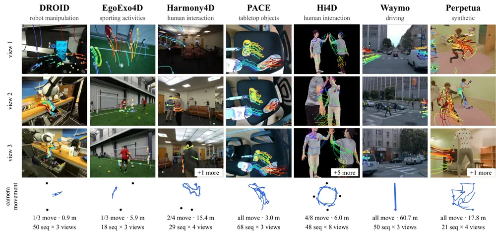
Recursive Value Learning for Long-Horizon Offline Goal-Conditioned RL
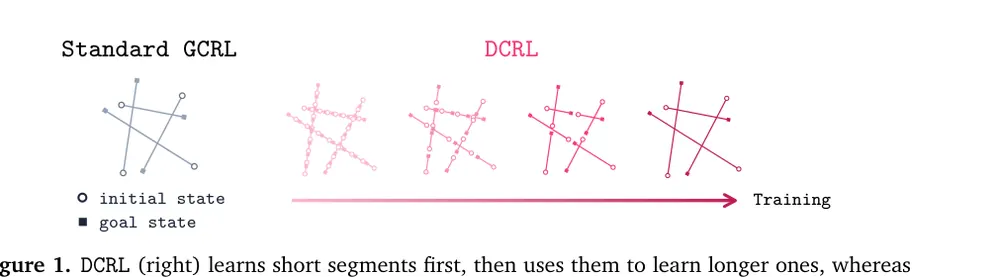
Spatially Aware World Action Model via Geometric Latent Diffusion
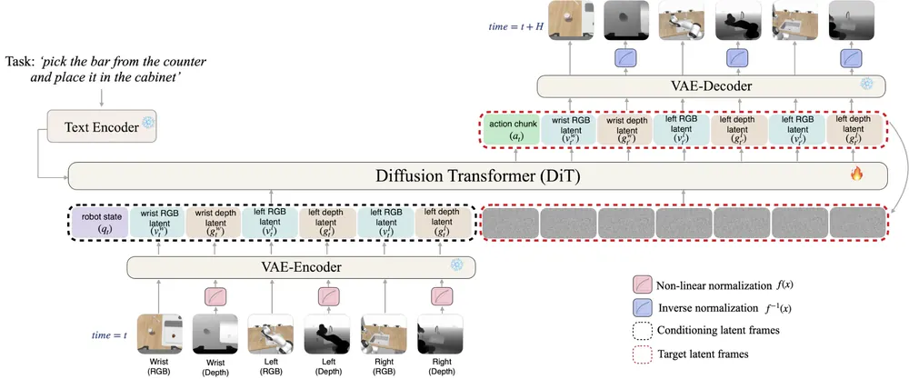
ZETA: A Controlled Study of Zero-Shot Cross-Embodiment VLA Transfer for Tabletop Manipulation
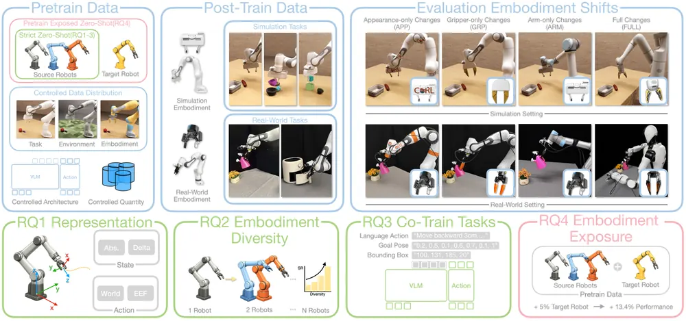
Act More, Decide Less: Skill-Guided Adaptive Action Chunking for Long-Horizon LLM Agents
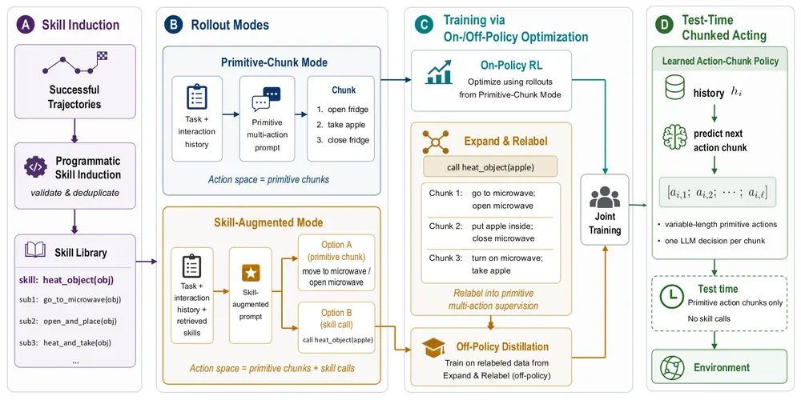
One Demonstration, Many Objects: Generalizing Manipulation via Local Contact Geometry
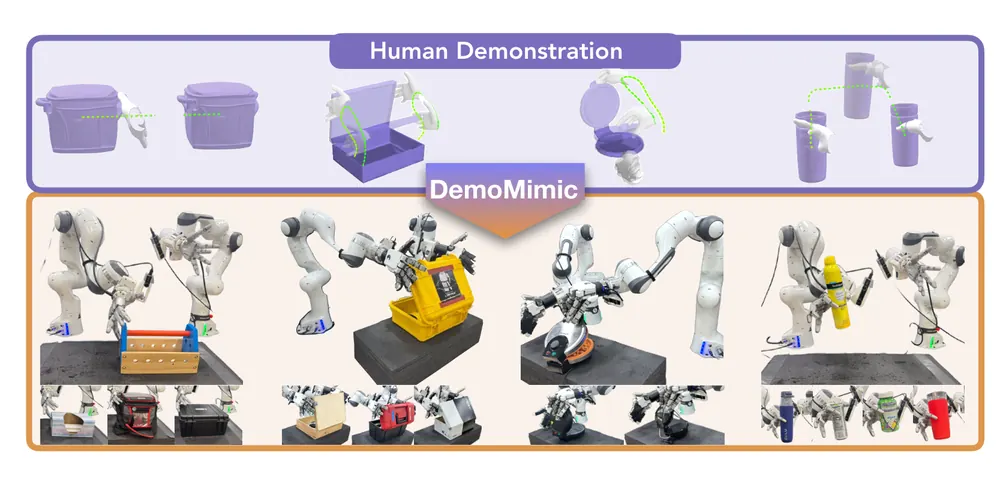
World-Coherent Decoding: Self-Verifying Test-Time Planning for World Action Models
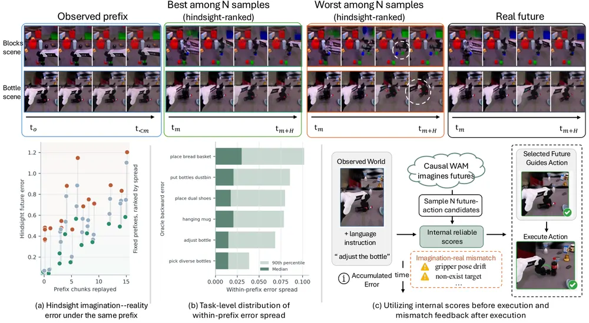
HINT: Human-Intent Inception for Long-Horizon Robot Manipulation
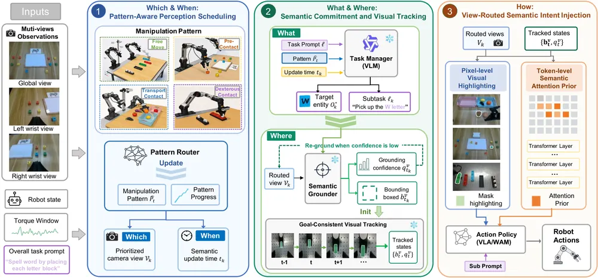
World-Model-Augmented Visual Locomotion for Humanoids on Foothold-Constrained Terrain
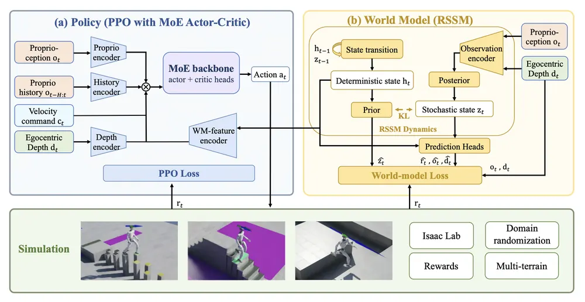
LookStep: Efficient Vision-Language Navigation with Linguistic Foresight and Event Driven Memory
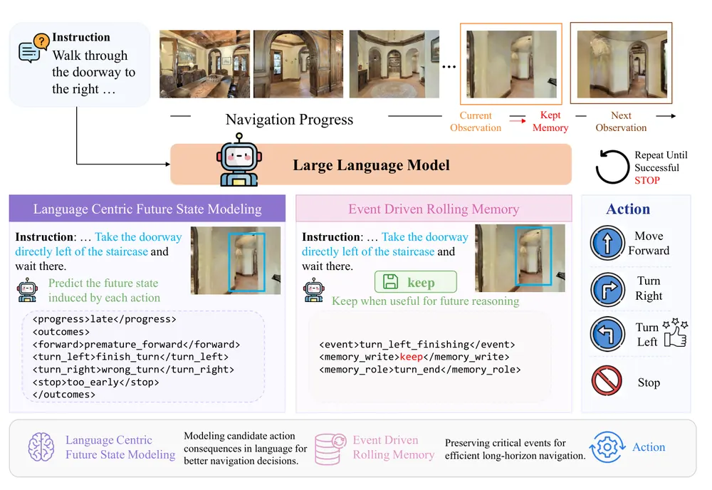
Beyond Textual Chain-of-Thought: A Survey on Action-Grounded Reasoning in Autonomous Driving
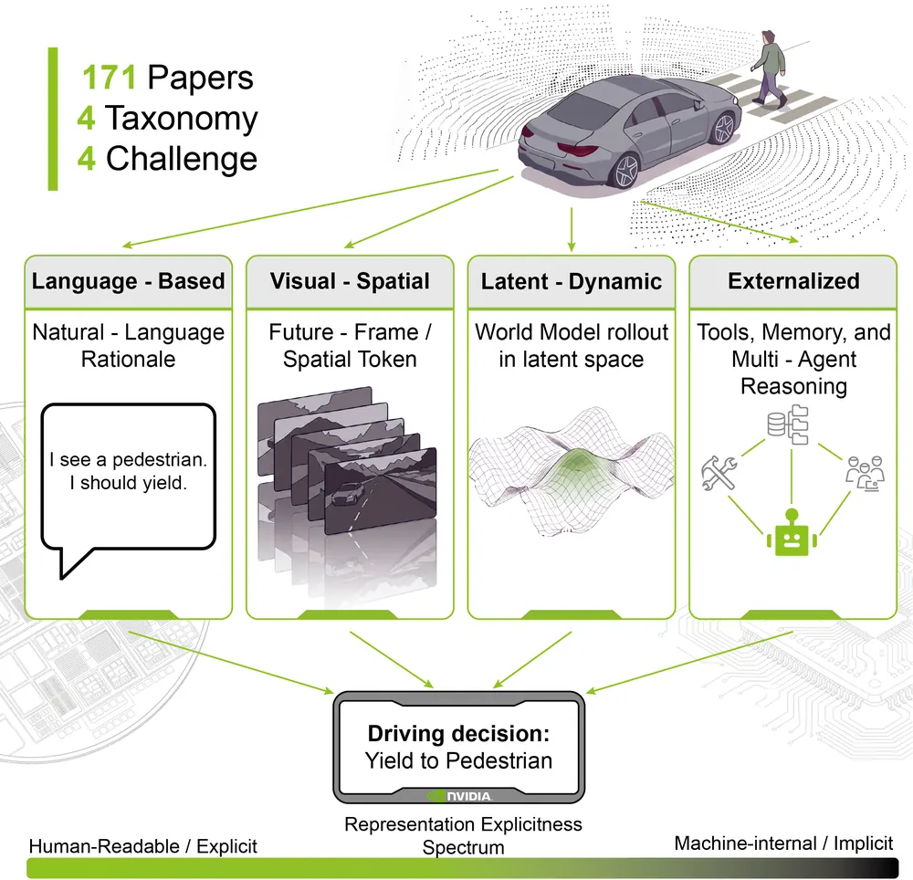
SolarWM: Open Data and Scalable Training for Long-Horizon Video World Models
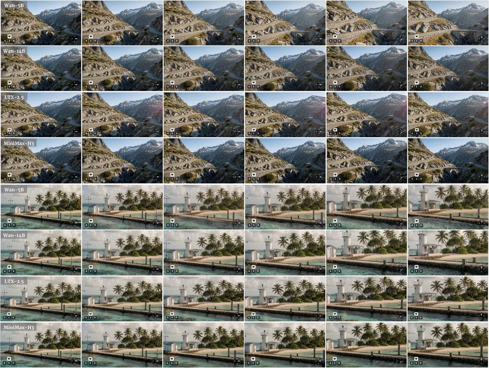
Do Better Imagined Rollouts Mean Better Robot Control? A Controlled Study of World-Model Evaluation Under Feedback
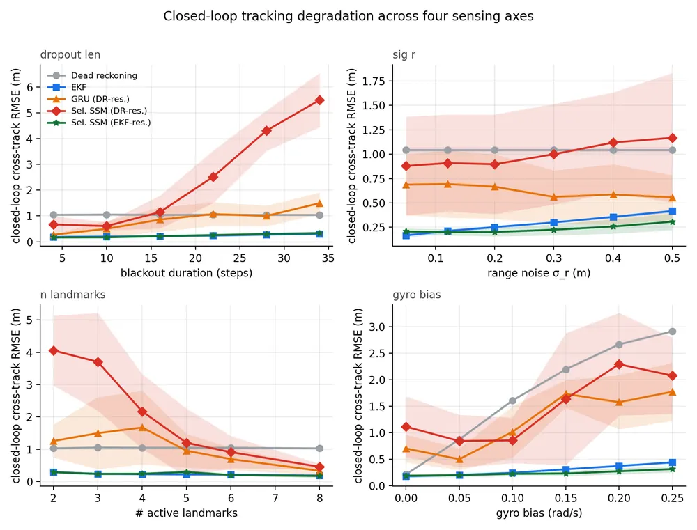
Towards Zero-Shot Transfer Across Embodiments For Driving VLAs
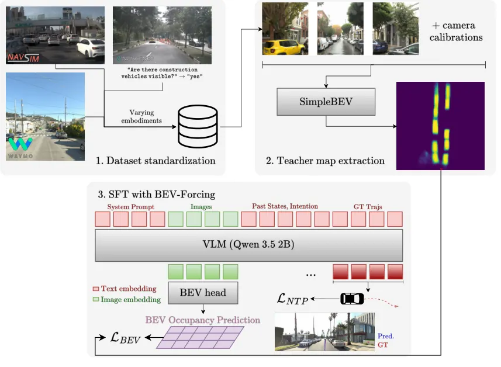
Modeling What Changes: Sparse, Residual World Models for Object-Centric Manipulation
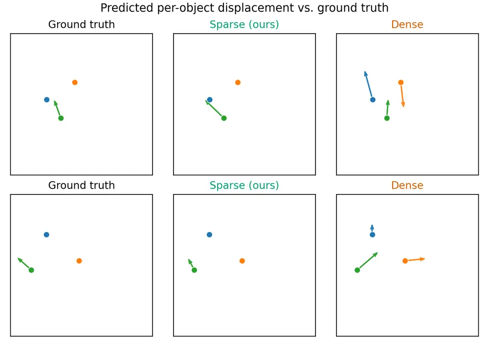
오늘의 핵심 연구 트렌드 종합
- world action model이 test-time planning의 기본 단위로 자리잡음 — World-Coherent Decoding, Spatially Aware World Action Model, SolarWM이 모두 pretrained video diffusion 기반 WAM(world action model)을 공통 백본으로 삼음. WCD는 reward 없이 모델 내부 신호로 rollout을 고르고, SA-WAM은 depth latent를 추가로 주입해 성능을 올림.
- cross-embodiment/OOD 일반화를 정량 분해하는 통제 실험 논문이 늘어남 — ZETA는 표현·데이터 다양성·co-training·노출 비율 4개 요인의 효과를 정량 분해해 다양성 자체가 가장 큰 개선 요인임을 보임. BEV-Forcing 기반 driving VLA는 반대로 학습 embodiment 다양성이 늘수록 BEV-Forcing이라는 개별 기법의 효과가 줄어든다는 것을 보임.
- long-horizon credit assignment를 abstraction 단위로 해결하려는 흐름 — SPACE는 LLM agent의 action을 skill 경계 supervision으로 chunk하고, DCRL은 offline GCRL(goal-conditioned RL)의 value bootstrap을 이진 트리로 재귀 분할함. 도메인은 다르지만 "매 스텝 단위 credit assignment의 오류 누적"이라는 같은 문제를 다른 계층에서 공략함.
- 저비용 event trigger로 고비용 reasoning 빈도를 줄이는 시스템 설계 — LookStep은 VLN에서 관찰을 memory에 남길지를 모델이 판단하게 하고, HINT는 manipulation pattern이 바뀔 때만 VLM을 다시 부름. 둘 다 지연시간을 3배 이상 줄이면서 성능은 유지·개선함.
- 자기비판적 controlled study·negative result 공개가 하나의 장르로 보임 — Modeling What Changes는 제안 기법의 실익이 사실상 no-op 수준임을 스스로 밝히고, rollout vs closed-loop 상관성 연구는 rollout horizon보다 측정 보정 빈도가 핵심 변수임을 보임. SOTA 경쟁보다 가설 검증에 무게를 둔 논문이 늘어남.
- 3D 인프라 논문(벤치마크·서베이)이 로봇 인식 하부구조를 재정의 — TAPVid-MV는 다중 뷰 3D point tracking 병목이 tracker가 아니라 dynamic geometry 복원에 있음을 밝혔고, action-grounded reasoning 서베이는 자율주행 reasoning 표현을 4개 축으로 정리함.
유망 연구 방향 및 프로젝트 제안
verifier-free test-time WAM 신호를 실패 탐지로 확장 - research question: WCD가 쓰는 flow surprisal(생성된 미래 영상의 velocity field 발산을 누적한 불확실성 신호)이 rollout 실패를 사전에 예측하는 failure detection 신호로도 쓰이는가. - 접근·novelty: reward/verifier 없이 얻은 self-verifying 신호를 재계획 트리거가 아니라 recovery 트리거(재계획 vs memory 질의 vs human 개입 분기)로 재해석함. - 왜 지금·경쟁 prior works: WCD가 Franka 실로봇에서 신호의 유효성을 이미 검증했지만 failure detection·recovery로는 확장하지 않음. - risk·target venue: WCD 자체도 Horizon-3(3단계를 잇는 긴 sub-task 세팅) 밖 일반화가 제한적이라 신호의 안정성 확인이 먼저 필요함. target: CoRL.
dexterous manipulation의 single-demo generalization을 object-centric 3DGS 표현과 결합 - research question: DemoMimic의 local contact geometry 조건화가 3DGS 기반 object-centric 표현으로 대체되면 unseen object shape에 대한 일반화가 더 늘어나는가. - 접근·novelty: 현재 mesh/point 기반 contact geometry를 gaussian primitive 단위 표현으로 바꿔 물체 형상 변화에 더 강건한 residual RL reward를 설계함. - 왜 지금·경쟁 prior works: DemoMimic이 16개 물체·4개 task에서 71% 실성공률로 이미 강력한 baseline을 세워, 표현만 바꿔 비교 실험하기 좋은 시점임. - risk·target venue: contact geometry를 3DGS로 바꿀 때 실시간 렌더링 비용이 residual RL 학습 루프에 병목이 될 수 있음. target: CoRL.
cross-embodiment diversity 분해 방법론을 실패 복구 데이터로 확장 - research question: ZETA가 밝힌 "source diversity가 co-training보다 효과 크다"는 결론이 실패 복구 정책 학습에도 성립하는가. - 접근·novelty: ZETA의 procedurally-generated embodiment pool 대신 procedurally-generated failure scenario pool을 구성해 동일한 factorize 실험(표현/다양성/co-training/노출 비율)을 반복함. - 왜 지금·경쟁 prior works: ZETA는 512개 embodiment·6,300 rollout 규모의 통제 실험 설계를 이미 공개해 재사용 가능함. - risk·target venue: ZETA는 tabletop manipulation에 한정되고 real-world 검증 규모가 작아, 실패 시나리오로 옮겨도 규모의 한계가 이어질 수 있음. target: CoRL/RSS.
event-driven re-reasoning trigger를 robot memory 공통 모듈로 일반화 - research question: LookStep(VLN)과 HINT(manipulation)가 각자 도메인에서 설계한 "언제 다시 생각할지" 판단 기준을 하나의 memory-conditioned trigger로 통합할 수 있는가. - 접근·novelty: 두 논문의 trigger 신호(관찰 novelty vs manipulation pattern 전환)를 공통 latent state-change 신호로 추상화해 VLN·manipulation 모두에 적용 가능한 memory 모듈을 설계함. - 왜 지금·경쟁 prior works: LookStep은 GPU 메모리를 44.3GB→19.7GB, HINT는 보조 추론 지연을 445ms→57ms로 줄여 event trigger의 실효성이 두 도메인에서 독립적으로 입증됨. - risk·target venue: 두 trigger 신호의 스케일이 달라(언어 태그 vs manipulation phase) 공통 표현을 만드는 것 자체가 별도 연구가 될 수 있음. target: ICRA/CoRL.
recursive value learning을 long-horizon manipulation skill chaining으로 이전 - research question: DCRL의 로그 depth bootstrap이 navigation/maze 중심 OGBench를 넘어 manipulation skill chaining에서도 동일한 이득을 주는가. - 접근·novelty: trajectory segment를 균형 이진 트리로 재귀 분할하는 DCRL의 학습 순서를 skill 단위 offline GCRL로 옮겨 TAMP급 long-horizon manipulation에 적용함. - 왜 지금·경쟁 prior works: DCRL은 이론적 bootstrap depth 증명과 OGBench 최장 horizon 평균 55점을 64점으로 올린 강한 실험 결과를 동시에 갖춘 흔치 않은 논문임. - risk·target venue: DCRL 실험이 전부 non-manipulation domain이고 real-robot 검증이 없어 이전 시 처음부터 실험을 다시 설계해야 함. target: ICLR/CoRL.
오늘 반드시 읽어야 할 논문
- World-Coherent Decoding — reward/verifier 없이 WAM 내부 신호만으로 test-time에 rollout을 고르는 방식이 실로봇 성공률을 실제로 올림.
- Spatially Aware World Action Model — video diffusion WAM에 depth latent를 더해 RoboCasa·LIBERO-Plus SOTA와 UR5 실로봇 강건성을 동시에 확보함.
- One Demonstration, Many Objects (DemoMimic) — 단일 데모로 16개 물체에 일반화되는 dexterous manipulation을 71% 실성공률로 입증함.
- Recursive Value Learning (DCRL) — offline GCRL의 bootstrap depth를 로그로 줄이는 이론과 실험을 함께 갖춰 오늘 배치 중 가장 완결적임.
- ZETA — cross-embodiment VLA transfer를 요인별로 분해한 통제 실험 설계 자체가 재사용 가치가 큼.
- SPACE — LLM agent가 매 스텝 하나의 action만 내다 학습이 무너지는 single-action collapse 문제를 skill 경계 증류로 풀어 long-horizon 효율을 높임.
- HINT — manipulation pattern 전환 시에만 VLM을 호출하는 구조로 dual-arm 실로봇 성공률과 지연시간을 동시에 개선함.
- WM-LOCO — world model과 PPO를 공동학습해 humanoid 실로봇의 gap·stepping-stone 통과를 baseline 0%에서 93%대로 끌어올림.
전체 1차 스크리닝 결과 (351편, 점수순) 펼치기
| # | 제목 | 점수 | 🤖 | 분야 | 한 줄 근거 |
|---|---|---|---|---|---|
| 1 | World-Coherent Decoding: Self-Verifying Test-Time Planning for World Action Models | 78 | 9 | World Model | World Action Model rollout을 flow surprisal과 action effort로 순위화해 신뢰할 만한 미래만 선택하는 test-time planning임. RoboTwin과 실제 Franka 검증 포함해 world model test-time optimization 우선주제에 정확히 부합함 |
| 2 | Spatially Aware World Action Model via Geometric Latent Diffusion | 74 | 9 | World Model | 사전학습 video diffusion을 RGB+depth 공동예측으로 확장해 3D-aware world action model을 만듦. RoboCasa·LIBERO-Plus에 더해 실제 UR5 실험까지 포함해 world model 우선주제에 강하게 부합함 |
| 3 | SolarWM: Open Data and Scalable Training for Long-Horizon Video World Models | 74 | 6 | World Model | video world model 학습용 데이터·파이프라인·가중치를 전부 공개한 오픈 파운데이션으로 5B-33B 모델을 초 단위 학습으로 시간 단위 rollout까지 확장한 world model 우선주제 논문임 |
| 4 | One Demonstration, Many Objects: Generalizing Manipulation via Local Contact Geometry | 68 | 9 | Manipulation | 국소 접촉 기하학 기반 reward로 한 데모에서 물체 일반화하는 dexterous manipulation, 16개 물체·2개 embodiment 실로봇 검증이 강함 |
| 5 | Modeling What Changes: Sparse, Residual World Models for Object-Centric Manipulation | 62 | 9 | World Model | world model이 변화하는 물체만 예측하는 sparse residual 구조로 파라미터 대비 정확도와 planning 성공률을 크게 개선함 |
| 6 | World-Model-Augmented Visual Locomotion for Humanoids on Foothold-Constrained Terrain | 62 | 9 | World Model | world model이 예측한 recurrent feature로 발판 제약 지형에서 humanoid 보행을 안내, Unitree G1 실기 배포로 93.3% 성공률 검증함 |
| 7 | Recursive Value Learning for Long-Horizon Offline Goal-Conditioned RL | 62 | 7 | RL | 긴 궤적을 balanced binary tree로 재귀 분해해 offline goal-conditioned RL의 bootstrap depth를 로그 스케일로 줄인 방법으로 OGBench 최고난도 태스크에서 기존 최고 평균 점수를 55에서 64로 끌어올림 |
| 8 | Towards Zero-Shot Transfer Across Embodiments For Driving VLAs | 61 | 7 | VLA | 자율주행 VLA의 cross-embodiment zero-shot 전이를 BEV-Forcing 보조목표로 개선함. 학습 embodiment 수가 늘수록 보조목표 이득이 줄어든다는 스케일링 관찰이 정직하고 유의미함 |
| 9 | LookStep: Efficient Vision-Language Navigation with Linguistic Foresight and Event Driven Memory | 61 | 7 | Navigation | 언어 기반 미래상태 예측과 이벤트 기반 rolling memory로 VLN을 경량화함. R2R-CE에서 적은 데이터·메모리로 성능을 내 robot memory·VLN 우선주제에 부합함 |
| 10 | ZETA: A Controlled Study of Zero-Shot Cross-Embodiment VLA Transfer for Tabletop Manipulation | 58 | 9 | VLA | cross-embodiment VLA zero-shot transfer를 14개 embodiment 통제 벤치마크로 체계 분석해 state-action 표현 등 실용적 지침을 제공함 |
| 11 | HINT: Human-Intent Inception for Long-Horizon Robot Manipulation | 58 | 9 | VLA | 의미 추론은 패턴 전환 시점에만 하고 이후엔 시각 추적으로 유지하는 human-intent 원리를 VLA에 결합, 두 foundation policy에서 성공률을 개선함 |
| 12 | Do Better Imagined Rollouts Mean Better Robot Control? A Controlled Study of World-Model Evaluation Under Feedback | 58 | 8 | World Model | closed-loop 제어에서 world model 평가는 rollout 오차보다 replay 오차가 실제 성능과 더 잘 상관함을 통제 실험으로 보임, world model 평가 방법론에 시사점이 큼 |
| 13 | Beyond Textual Chain-of-Thought: A Survey on Action-Grounded Reasoning in Autonomous Driving | 58 | 5 | Embodied AI | 171편 서베이로 action-grounded reasoning 분류체계 정리함. 새 방법론은 아니지만 driving CoT 흐름 정리로 참고 가치 있음 |
| 14 | Act More, Decide Less: Skill-Guided Adaptive Action Chunking for Long-Horizon LLM Agents | 58 | 5 | Embodied AI | trajectory에서 뽑은 skill 경계를 chunk boundary 감독 신호로 증류해 LLM agent의 action chunking을 학습시킨 방법으로 skill chaining·long-horizon planning 우선주제와 직접 연결되며 ALFWorld·ScienceWorld에서 성능·효율을 동시에 개선함 |
| 15 | TAPVid-MV: A Benchmark for Tracking Any Point in 3D Across Multiple Views | 57 | 5 | 3D Vision | 다중 카메라 3D point tracking 최초 벤치마크로 로보틱스·AR/VR 데이터 포함함. 기존 방법 모두 실패 수준이라 geometry 병목을 드러낸 점이 유의미함 |
| 16 | A Survey on Self-Improving Test-Time Intelligence: Feedback-Driven Adapting, Learning, and Scaling at Inference | 56 | 4 | LG | test-time adaptation·learning·scaling을 하나의 틀로 묶은 서베이로 test-time optimization 우선주제를 로보틱스까지 포괄해 정리했으나 서베이라 새 실험적 기여는 없음 |
| 17 | MACAW: Reliable And Efficient Surgical Debridement Using Monocular Adaptive Compact Attention Windows | 55 | 7 | Manipulation | 수술 debridement용 monocular depth 제어 기법으로 VLA baseline 대비 실로봇 성능이 뚜렷하나 응용 범위가 좁음 |
| 18 | Discriminative World Models for Web Agents | 55 | 3 | World Model | web agent test-time action selection용 world model을 supervised next-state prediction 대신 discriminative한 predicted-state matching objective로 학습한 아이디어로 world model·test-time planning 우선 주제와 직결되나 도메인이 web agent라 robot 검증은 없음 |
| 19 | If It Moves, Radar Knows: A Physics-Aware Radar Transformer for Class-Agnostic Moving-Object Detection | 54 | 5 | Navigation | closed-set 탐지가 놓치는 미분류 이동객체를 레이더만으로 잡는 class-agnostic 검출기임. nuScenes에서 안전 관련 rare class recall이 높고 야간·우천에서도 강건함 |
| 20 | RoGe: Novel View Synthesis via End-to-End Implicit Reconstruction and Generation | 54 | 3 | 3D Vision | sparse view에서 implicit reconstruction과 video diffusion을 explicit 3D 중간표현 없이 end-to-end로 결합해 궤적을 따라 장면을 roaming하는 novel view synthesis 방법으로 world model에 인접한 아이디어임 |
| 21 | Unified Motion Retargeting for Humanoids with Learned Point Cloud Correspondence | 52 | 8 | Embodied AI | 학습된 point cloud correspondence로 human-to-humanoid retargeting을 수작업 keypoint 없이 통합한 확장 가능한 데이터 파이프라인임 |
| 22 | MS-MEM: Multi-Skill Manipulation-Enhanced Mapping via Uncertainty- and Disturbance-Aware Action Selection | 52 | 8 | Manipulation | 능동 시점 선택·밀기·잡기를 하나의 evidential mapping 프레임워크로 통합, active perception과 manipulation을 결합한 formulation이 흥미로움 |
| 23 | DiDrive: A Risk-Aware Hierarchical Diffusion Framework for Safe Offline Reinforcement Learning in Autonomous Driving | 52 | 5 | RL | 위험 인지 hierarchical diffusion과 in-sample calibrated guidance로 CARLA 자율주행 offline RL의 OOD 문제를 다룬 방법으로 diffusion policy·RL 우선주제와 맞닿아 있으나 검증이 sim(CARLA)에 한정됨 |
| 24 | InceptionGS: Generative Bootstrapping for Large-Scale Gaussian Splatting under Unstructured View Sampling | 52 | 3 | 3D Vision | 대규모 3DGS에서 view 부족 영역만 generative prior로 보완하는 방법으로 3DGS 우선주제이나 reconstruction+generation 결합 아이디어의 연장선임 |
| 25 | Rethinking the Teacher-Student Framework for Test-Time Adaptation | 52 | 2 | CV | test-time adaptation의 teacher-student EMA가 긴 시퀀스에서 여전히 error accumulation을 일으킨다는 것을 보이고 teacher를 아예 업데이트하지 않는 게 낫다는 반직관적 결과를 제시한 test-time optimization 우선주제 논문임 |
| 26 | VIPS: Vehicle-Infrastructure Cooperative Planning Benchmark via Pseudo-Simulation | 51 | 5 | Navigation | 차량-인프라 협력 계획을 pseudo-simulation으로 확장성 있게 평가하는 벤치마크와 sparse feature 협력 플래너를 제시함. closed-loop 평가의 비용 문제를 절충한 점이 실용적임 |
| 27 | A Physics-Consistent Benchmark for Contact-Rich Human-Robot Interaction in Assistive Care | 50 | 8 | Manipulation | 접촉이 많은 assistive care 과제에서 물리 정합적 벤치마크를 제시해 pi0.5 등 기존 정책의 실패를 드러냄, VLA 한계를 보여주는 평가 기여가 의미있음 |
| 28 | ZipTok3D: High-Fidelity 3D Tokenization with Compact Token Prefixes | 50 | 3 | 3D Vision | 3D tokenizer를 극소 토큰 prefix로 압축하는 nested dropout 기반 방법임. object-centric 3D representation 방향에서 참고할 만함 |
| 29 | What Is Worth Representing? Representational Empowerment for Continual Model Construction | 50 | 3 | World Model | 에이전트가 무엇을 표현할지를 미래 계획 능력 확장으로 점수화하는 Representational Empowerment 개념을 제안해 continual world model 구축에 적용한 연구로 world model·robot memory 우선주제와 개념적으로 맞닿아 있음 |
| 30 | Synergistic Information Disentanglement for Omni-modal Slide Representation Learning in Computational Pathology | 49 | 1 | Multimodal | partial information decomposition으로 모달리티 간 시너지 신호만 남기는 self-supervised 프레임임. 대조학습의 modality collapse 문제를 이론적으로 다룬 점은 일반화 가능성 있으나 병리 도메인 특화 검증임 |
| 31 | Latent Cluster Analysis for Vision-Language-Action Models | 48 | 8 | VLA | GR00T N1.5 action decoder의 latent cluster를 층별로 분석해 VLA 내부 표현의 해석가능성을 높인 연구임 |
| 32 | Humanoid Safe Stop via Learned Stoppability Value | 48 | 7 | Embodied AI | 정지 가능성을 학습된 reach-avoid 추정으로 판단하는 humanoid 비상정지 프레임워크로 태스크 무관 전이가 특징이나 검증 범위가 제한적임 |
| 33 | WMLLM: Self-Evolving Optimization Agents via Predict-Then-Act World Modeling | 48 | 2 | World Model | LLM 기반 predict-then-act world model로 black-box 분자 최적화의 sample efficiency를 높인 방법으로 world model 개념은 우선주제이나 응용 도메인이 분자 최적화라 로보틱스와는 거리가 있음 |
| 34 | Induction and Inquiry via Probabilistic Reasoning over Language and Code | 48 | 1 | AI | 언어와 코드를 결합한 mental program을 LLM 유도 베이지안 추론으로 갱신해 인간의 귀납적 학습 편향을 재현하는 인지과학 모델임 |
| 35 | Do Large Language Models Capture the Diversity in their Training Data? | 48 | 0 | LG | LLM 생성물이 학습 데이터의 조건부 다양성을 따라가지 못함을 정보이론적으로 규명하고 matrix-entropy 기반 보정 알고리즘을 제시, 이미지·텍스트 전반에 적용됨 |
| 36 | oHC: Orthogonal Hyper-Connections on SO(4) via Quaternions | 48 | 0 | LG | residual stream mixing을 SO(4) 회전군으로 제약해 기존 doubly stochastic 방식의 diversity 붕괴 문제를 이론적으로 해결한 아키텍처 기여임 |
| 37 | Epistemic Sybil Resistance: Multiplying AI Agents Without Multiplying Evidence | 48 | 0 | Multimodal | multi-agent 보고서의 인식론적 중복(Sybil) 문제를 정보이론으로 formalize하고 2만 건 실험으로 뒷받침한 탄탄한 이론 연구지만 robotics 적용점은 없음 |
| 38 | YesTrack: Referring Multi-Object Tracking via MLLM-based Yes/No Verification | 47 | 4 | Multimodal | referring MOT를 캡션 생성 대신 MLLM Yes/No 판별로 재정식화함. 언어 지시로 물체를 지속 추적한다는 점에서 로봇 지시 이행과 맞닿아 있음 |
| 39 | Query Rewriting for Complex Object Segmentation in 4D Gaussian Representations | 47 | 4 | 3D Vision | 장황한 질의를 키워드 중심으로 재작성해 4D Gaussian 장면의 언어 기반 객체 세그멘테이션을 개선함. 학습 없이 vIoU를 크게 끌어올려 4D scene representation에 실용적임 |
| 40 | Does Playing it Safe Count as Faithfulness? Reassessing LVLM Hallucination Mitigation Methods | 47 | 1 | Multimodal | LVLM 환각 완화 기법들이 사실은 보수적 생성으로 점수만 낮춘다는 재평가 연구임. 평가 프로토콜 문제를 잘 드러낸 비판적 분석임 |
| 41 | Signal or Noise? Auditing Rotation-Induced Saliency Drift in Medical and Aerial Imaging | 47 | 1 | CV | Grad-CAM 회전 불안정성이 classifier pooling이 버리는 자유도에서 온다는 원인을 인과적으로 규명함. 해석가능성 방법론으로서 분석이 탄탄함 |
| 42 | A Study of Conditional Diffusion Models for Open-Loop Control under Dry Friction and Stiction | 46 | 6 | Manipulation | dry friction·stiction이 있는 point-mass 시스템에서 action diffusion을 open-loop control에 적용해 CEM 등 대비 성능을 비교한 연구로 diffusion policy 계열과 맞닿아 있으나 검증이 단순 point-mass 벤치마크 하나에 그침 |
| 43 | TempoGround: State-Aware Streaming Visual Grounding with Vision-Language Models | 46 | 4 | 3D Vision | 스트리밍 입력에서 물체 등장·지속·이탈 상태를 추적하며 2D를 3D 박스로 리프팅하는 VLM 프레임임. 임베디드 에이전트의 실시간 grounding에 관련 있음 |
| 44 | AGI Maze Prediction Datasets: A Compact Benchmark for Learning World Dynamics with Transformers | 46 | 3 | World Model | grid world에서 action-conditioned dynamics를 예측하는 경량 world model 벤치마크로 구조화된 2D working memory가 일반 latent memory보다 낫다는 것을 보였으나 미로라는 단순 환경에 국한됨 |
| 45 | Post-Training Language Models for Gold-Medal Performance in Coding Competitions | 46 | 0 | NLP | IOI 2026에서 인간 최고 점수를 넘어선 코딩 competition 특화 LLM으로 SFT+RL+test-time refinement를 결합해 골드 메달 수준을 달성했으나 경쟁 프로그래밍 도메인 한정이고 로보틱스와는 무관함 |
| 46 | Stereo 4D Radar for 3D Object Detection: Integrating Geometric Alignment and Absolute Velocity Estimation | 45 | 4 | 3D Vision | 스테레오 4D 레이더로 절대속도까지 추정하는 3D 객체탐지 프레임임. 단일 레이더 대비 물리적으로 타당한 개선이나 센서 특화 엔지니어링임 |
| 47 | SkillGLoW: Procedural-Family Skill Consolidation for Self-Improving Agents on Long-Horizon Task Streams | 45 | 3 | Embodied AI | task cluster 단위로 절차적 스킬을 압축·재생성하는 SkillGLoW는 ALFWorld 등 embodied control 포함 4개 벤치마크에서 일관된 개선을 보였고 skill chaining·long-horizon planning과 직결됨 |
| 48 | Information Density Imbalance in Visual Object Detection | 45 | 1 | CV | 인스턴스 수가 균형 잡혀도 정보 밀도 불균형이 카테고리 편향을 만든다는 새 관점을 제시함. VOC·COCO-LT·LVIS 실험으로 기존 손실함수 개선까지 보여 이론적 기여가 있음 |
| 49 | When Decodability Is Not Enough: Logical Validity Representations, Behavioral Dissociation, and Causal Tests in Language Models | 45 | 0 | NLP | logical validity가 은닉 상태에서 거의 완벽히 decodable하지만 행동이나 개입에는 반영되지 않는 해리 현상을 인과적으로 검증함 |
| 50 | Trace as State: Reasoning Traces as Conditional States for Long-Context Transformers | 45 | 0 | LG | reasoning trace를 context 앞에 배치하면 causal transformer 구조를 유지한 채 장문맥 추론이 크게 개선됨을 이론·실증으로 보임 |
| 51 | EvalDetectBench: A Benchmark for Measuring Evaluation Awareness in Frontier Language Models | 45 | 0 | NLP | LLM이 평가 상황임을 인지하는 evaluation awareness를 측정하는 벤치마크로 기존 측정의 두 가지 편향을 교정함 |
| 52 | MV-dVRK: A Multi-Viewpoint Benchmark for Spatial Surgical Perception | 44 | 4 | 3D Vision | 수술 로봇 multi-viewpoint 3D reconstruction 벤치마크로 실제 임상 데이터 기반이나 새 방법론 없이 벤치마킹 위주임 |
| 53 | AutoCompass: Accurate Visual Localization on Public Maps by Learning from Weak Labels | 44 | 3 | Navigation | 부정확한 GPS 라벨만으로 지도-이미지 매칭 pose를 학습시켜 heading label이 불필요함을 보인 방법으로 navigation localization에 실용적임 |
| 54 | Who Drives the Probability Game of VLMs? A Temporal Causal Drive Evaluation Framework | 44 | 2 | Multimodal | 구조적 인과모형으로 VLM 디코딩 시 시각·질문·prefix의 영향력을 단계별로 추적함. VLA 해석가능성에 참고될 인과적 진단 프레임임 |
| 55 | Emergence of Fibrations, Compression, and Symmetry Breaking in Artificial Neural Networks | 44 | 0 | LG | SGD가 만드는 covering symmetry(fibration)를 이론적으로 규명해 압축과 continual learning에 적용한 이론 논문으로 여러 아키텍처에 걸쳐 검증했으나 로보틱스 응용은 없음 |
| 56 | CC-4DGS: Computational Deformation and Point-Cloud Compression for Storage-Efficient Dynamic Gaussian Splatting | 43 | 3 | 3D Vision | 4D Gaussian Splatting의 deformation field와 정준 속성을 압축해 저장용량을 대폭 줄임. 4DGS 표현 자체는 관련 있으나 압축·효율화가 핵심 기여라 감점함 |
| 57 | CoViT: Instance-Correspondence Contrastive Learning for Vision Transformer | 43 | 2 | CV | ViT에 attention 기반 마스킹으로 instance-aware contrastive learning 주입함. self-supervised representation 개선으로 object detection에 도움 되나 novelty는 중간 수준임 |
| 58 | CA-OPD: Confidence-Aware On-Policy Distillation for Structured Visual Prediction | 43 | 2 | Multimodal | teacher confidence로 student rollout 개입 지점을 정해 on-policy distillation을 안정화함. GUI grounding·OCR 검증이나 정책 distillation 아이디어는 VLA 학습에도 참고 가능함 |
| 59 | WiFlow: Estimating Optical Flow using WiFi Channel State Information | 43 | 2 | CV | 카메라 대신 WiFi CSI만으로 optical flow를 추정하는 새 문제와 데이터셋을 제시함. 비시각 센싱이라는 참신한 방향이나 활용처는 아직 제한적임 |
| 60 | ShallowStream: Index Shallow then Answer Deep for Streaming Video Understanding | 42 | 2 | Video | MLLM의 얕은 layer만으로 streaming video 인덱싱·검색을 동시에 처리해 지연시간을 크게 줄인 효율화 방법으로 embodied 응용을 언급하지만 핵심은 inference 가속임 |
| 61 | Sim2Signal: Sim-to-Real Benchmarks for Traffic Signal Control | 42 | 2 | RL | traffic signal control RL의 sim-to-real gap을 4개 요인으로 분해해 18개 완화 기법을 체계적으로 비교한 벤치마크로 sim-to-real 방법론 통찰은 로봇 RL에도 참고할 만함 |
| 62 | Coverage, Not Targeting: A Structural Regime in Multi-Turn Agent Credit Assignment | 42 | 2 | RL | verifier information density라는 구조적 지표로 언제 dense reward가 targeting보다 나은지 규명해 multi-turn agent RL의 credit assignment 통념을 뒤집었으나 tool-use LLM agent에 국한됨 |
| 63 | User Feedback Provides a Unique Signal that LLMs Can not Detect | 42 | 2 | NLP | 사용자 피드백이 실제로는 유용한 학습 신호이며 그동안 평가 편향 때문에 무용해 보였음을 밝힌 연구임 |
| 64 | Diagnosing with Insights: Structured Analysis of Agent Failures via Behavioral Abstractions | 42 | 2 | LG | agent trajectory를 구조화 표상과 neural invariant로 abstract해 실패 지점을 특정하는 neuro-symbolic 진단 기법으로 failure detection·diagnosis 우선 주제와 직접 닿아있으나 도메인이 소프트웨어 agent임 |
| 65 | Generating Medical Image Counterfactuals using Causal Explanations | 42 | 1 | CV | 분류기 내부 causal evidence로 generator 없이 counterfactual을 만드는 방법으로 novelty는 있으나 의료 영상 진단 XAI에 국한되고 로보틱스와는 무관함 |
| 66 | Language Models Can Control Their Own Attention | 42 | 1 | LG | 모델이 chain-of-thought로 자신이 주목할 context 범위를 선언하게 해 KV cache 읽기를 줄이는 새로운 발상의 효율화 기법임 |
| 67 | A Unified Rate-Distortion Perspective on Vector, Product, and Scalar Quantization | 42 | 0 | CV | vector·product·scalar quantization을 rate-distortion 관점에서 통합 분석해 VQ가 distortion 측면에서 우월함을 규명한 discrete visual tokenization 기초 연구임 |
| 68 | Disentangling Statistical Preemption from Entrenchment in Language Models' Avoidance of Overgeneralization | 42 | 0 | NLP | LM이 과잉일반화를 회피하는 기제를 preemption과 entrenchment로 분리한 통제 실험 연구로 언어습득 이론에 흥미로운 시사점을 줌 |
| 69 | AI agents reshape consensus formation in human groups | 42 | 0 | NLP | 인간-AI 혼합 집단에서 LLM 비율에 따라 합의 형성 양상이 세 체제로 갈리는 현상을 실험으로 규명함 |
| 70 | OBJECTION! Lawyer Agents Mitigate Guilty Bias in Legal Judgment Prediction | 42 | 0 | NLP | 법률 판단 예측에서 변호인 에이전트가 유죄 편향에 반박하도록 해 오탐률을 82.93%에서 16.69%로 크게 낮춤 |
| 71 | Untangling the Mechanisms of Misleading Context in Medical Question Answering | 42 | 0 | NLP | 의료 QA에서 오도하는 맥락이 추론을 왜곡하는 기제를 민감도·노출·모니터링 가능성으로 분해해 분석함 |
| 72 | Learning to Track from Privileged Target Appearances | 41 | 3 | CV | 미래 프레임까지 보는 privileged teacher의 표현을 student tracker에 전이하는 학습법임. 배포 시엔 과거 템플릿만 쓰는 실용적 설계이나 tracking 벤치마크 개선 위주임 |
| 73 | InsightSeg: Reusing Correction Insights for Guideline-Consistent Segmentation | 41 | 2 | CV | 멀티에이전트 세그멘테이션 교정 경험을 episodic memory로 재사용해 반복 실수를 막음. robot memory와 개념적으로 맞닿아 있으나 세그멘테이션 과제에 국한됨 |
| 74 | FOCUS: Foot Observation Confidence for Robust Humanoid Proprioceptive Odometry | 40 | 7 | Embodied AI | 이족보행 odometry에서 발 접촉 신뢰도를 연속값으로 추정해 EKF에 결합, ATE를 크게 낮췄으나 방법 자체는 점진적 개선임 |
| 75 | Not All Agreement Counts as Corroboration: Provenance-Conserving Multi-View Fusion for Typed Action Admission in Human-Robot Collaboration | 40 | 6 | Embodied AI | HRI에서 증거 출처 기반 fusion 프레임워크로 formalism은 무겁지만 실효성 검증은 제한적임 |
| 76 | CrashDiffuser: VLM-Guided Collision Intent Reasoning for Fine-Grained Safety-Critical Traffic Scenario Generation | 40 | 5 | Navigation | VLM으로 충돌 의도를 추론해 특정 부위 충돌 시나리오를 생성하는 안전성 평가 도구로 자율주행에 특화됨 |
| 77 | From Proxy Learning to Driving Decisions: A Transfer-Based Framework for Evaluating Future-Aware Autonomous Driving Planners | 40 | 5 | Navigation | future-aware 자율주행 planner의 성능 향상 주장을 proxy metric에서 실제 decision transfer로 검증하는 분석 프레임워크로 자율주행에 특화됨 |
| 78 | RVSD: Retrieval Vision Sparse Decoding for Mitigating Visual Hallucinations in Large Vision-Language Models | 40 | 1 | Multimodal | 토큰 sparsification과 semantic-space retrieval을 묶은 training-free decoding으로 VLM hallucination을 줄인 방법임 |
| 79 | Cliff: Learning Process Rewards from the First Mistake | 40 | 1 | RL | reasoning rollout에서 첫 오류 지점을 teacher LLM으로 찾아내 prefix/suffix로 나눠 advantage를 부여하는 reward shaping 방법으로 failure detection 발상과 유사하지만 적용 대상은 LLM 추론 과정임 |
| 80 | CORAL: An LLM-Native Harness for Production Recommender Systems | 40 | 1 | NLP | 프로덕션 추천시스템을 LLM 에이전트가 지속적으로 재구성하는 closed-loop 시스템으로 실제 A/B 실험에서 검증됨, robotics의 test-time optimization과 결이 비슷하나 도메인은 recsys임 |
| 81 | Belief-Calibrated Optimization: An Explicit World Model for Agentic Optimization | 40 | 1 | LG | coding agent 자기개선 루프에 명시적 belief document를 world model로 도입한 아이디어는 흥미로우나 텍스트 scaffold 최적화에 국한되고 robot world model과는 거리가 멂 |
| 82 | Disease Burden over Skin Tone: Decomposing the Dermatology-AI Generalization Gap | 40 | 0 | Multimodal | 피부과 AI 일반화 저하가 피부톤보다 질환 분포 이동에서 더 크게 온다는 분해 분석임. 임상 배포 함의는 있으나 로보틱스 무관함 |
| 83 | Generative Diffusion Surrogates with Analytical Variance Schedule | 40 | 0 | CV | 물리적으로 알려진 분산 스케일을 diffusion noise schedule로 그대로 쓰는 방법으로 플라즈마 난류 수송 대리모델에 적용한 물리 informed generative model임 |
| 84 | The Dynamics of Continuous Mixture Collapse in Language Models | 40 | 0 | NLP | latent-state reasoning에서 mixture 표현이 왜 붕괴하는지 이론·실증으로 규명한 분석 논문으로 로보틱스와는 무관하지만 LLM 추론 구조에 근본적 통찰을 제공함 |
| 85 | Interpretable Symptom Vectors for Depression in a Large Language Model | 40 | 0 | NLP | 우울증 증상별 해석 가능한 벡터를 LLM 잔차 스트림에서 추출해 임상 판단과의 정합성을 보인 mechanistic interpretability 연구임 |
| 86 | How Output Format Confounds Data Quality and Capability in Instruction Tuning | 40 | 0 | LG | instruction tuning 평가가 출력 포맷에 의해 왜곡됨을 보인 방법론적 발견으로 벤치마킹 관행에 시사점이 있음 |
| 87 | HyGRAIL: Cost-Aware and Evidence-Grounded Scientific Hypothesis Discovery over Knowledge Graphs | 40 | 0 | NLP | 지식그래프 위 과학 가설 발굴을 GNN triage와 LLM 검증으로 결합, LLM 호출을 절반 이상 줄이면서 F1을 크게 개선함 |
| 88 | IDEEA: training-free Input-Dependent stEEring via Activation cluster matching | 40 | 0 | LG | steering 방향을 입력별 activation cluster에 맞춰 선택하는 training-free 기법으로 기존 고정 방향 대비 일관되게 개선함 |
| 89 | Bilevel Coordinated Reflection: A Game-Theoretic Approach to Multi-Agent LLM Systems | 40 | 0 | LG | orchestrator-worker 상호작용을 bilevel game으로 formalize하고 수렴성을 증명한 뒤 SWE-bench에서 검증한 이론·실증 결합 연구로 완성도는 높으나 robotics와 무관함 |
| 90 | Adapting a Foundation Model for Lunar Surface Height Estimation | 39 | 4 | 3D Vision | 달 착륙 위험지형 판단을 위해 Depth Anything V2를 SPG DEM 데이터로 도메인 적응시킴. 우주 로봇 착륙 인지에 실용적이나 fine-tuning 수준 기여임 |
| 91 | Kirin: Animal Motion Generation from In-the-Wild Video | 39 | 2 | CV | 야생 동물 영상에서 3D 모션 재구성 후 텍스트·이미지 조건 모션 생성함. motion prior 학습 자체는 흥미롭지만 애니메이션 응용 위주임 |
| 92 | Test-Time Logit Prompting for Source-Free Missing Modality Adaptation | 39 | 1 | Multimodal | 소스 데이터 없이 modality 누락 시 logit prompt만 test-time 최적화하는 방법임. test-time adaptation 자체는 관련 있으나 분류 과제 한정임 |
| 93 | Real-Time Dynamics-Based Torque-Sampling MPPI for Compliant and Force Aware Manipulation | 38 | 6 | Manipulation | GPU 병렬 torque-sampling MPPI로 실시간 compliant manipulation을 구현했으나 MPPI 자체는 기존 기법임 |
| 94 | DiffuSearch: How Hybrid Trajectory Planning Benefits from Aligned Objectives in Diffusion and Action Space | 38 | 5 | Navigation | diffusion 생성과 MCTS 정제를 같은 objective로 묶은 자율주행 hybrid planner로 워크숍 논문 수준의 응용 연구임 |
| 95 | PGPO: Potential-Guided Policy Optimization for Multi-Turn Agentic Tasks | 38 | 3 | RL | 실패 trajectory 내부의 credit assignment를 potential 차이로 세분화한 RL 기법으로 ALFWorld·WebShop 같은 embodied/agentic 환경에서 검증됐으나 로봇 실험은 없음 |
| 96 | CHIME: Credit-Aware Hierarchical Memory Evolution for Long-Horizon Agentic Planning | 38 | 2 | LG | planning과 execution 결과를 분리 귀속시켜 memory bank를 따로 갱신하는 credit assignment 아이디어로 long-horizon agent memory에 일반화 가능성 있으나 로봇 실험은 없음 |
| 97 | Thinking in Pictures: A Systematic Benchmark for Reasoning-driven Image Generation | 38 | 1 | Multimodal | 이미지 생성 모델의 reasoning-to-generation gap을 드러낸 새 벤치마크로 벤치마크 논문이라 방법론 기여는 제한적임 |
| 98 | C$^{3}$T: Counterfactual Causal Reasoning for Sentiment Shifts in Social-Media Conversation Trees | 38 | 1 | NLP | 소셜미디어 대화 트리에서 감성 변화의 원인을 counterfactual하게 귀속하는 causal reasoning 모델로 robotics 적용은 없으나 방법론적으로 관련됨 |
| 99 | Entangled Representations Amplify Collateral Damage in Unlearning | 38 | 0 | NLP | representational entanglement가 unlearning의 collateral damage 원인임을 통제 실험으로 직접 검증한 해석가능성 연구임 |
| 100 | Graph Machine: Towards Better Pretraining via Edges | 38 | 0 | LG | dense transformer layer의 75%를 edge 기반 sparse routing으로 대체해 O(n) state를 유지하면서 성능 저하를 최소화한 새로운 아키텍처 제안임 |
| 101 | Thinking effort aligns between humans and reasoning models in abductive reasoning | 38 | 0 | NLP | 추론모델의 사고 노력이 인간과 정렬되는지 abductive reasoning으로 검증, 형식적 난이도로 설명 안 되는 과제를 골라 더 견고한 근거를 제시함 |
| 102 | GAPS: Dimension-Level Gates for Conditional Activation Steering | 38 | 0 | LG | 활성화 steering을 뉴런 단위로 조건화한 GAPS 기법으로 독성 억제 성능을 기존 조건부 방법보다 크게 개선함 |
| 103 | DiffIE: Diffusion-based Open Information Extraction | 38 | 0 | NLP | Open IE를 discrete diffusion의 확률성으로 multi-output 추출하는 새로운 관점의 구조화 예측 기법임 |
| 104 | When Persona Attributes Improve Population Alignment in Large Language Models | 38 | 0 | NLP | 페르소나 속성이 설문 예측 정렬에 언제 도움이 되는지 대규모 실증 비교한 연구임 |
| 105 | From Tokens to Semantics: Leveraging Complementary Signals for Hallucination Detection in Black-Box LLMs | 38 | 0 | NLP | 토큰 확률과 semantic entropy의 상보적 실패 모드를 결합한 hallucination 탐지 기법으로 7개 벤치마크에서 검증함 |
| 106 | From Reweighting to Rewriting: Unlocking the Intervention Effects of Influential Samples in Training Data Attribution | 38 | 0 | LG | influence function으로 선정한 데이터를 reweight 대신 rewrite하면 개입 효과가 훨씬 강해짐을 보인 TDA 연구임 |
| 107 | Looped Transformers under the Jacobian Lens: Does the Global Workspace Survive Recurrence? | 38 | 0 | LG | looped transformer에서 global workspace 표상이 유지되는지 Jacobian lens로 분석한 해석가능성 연구로 참신하나 니치하고 robotics 연결이 없음 |
| 108 | DocHop: Benchmarking Out-of-domain Multi-hop Reasoning in Information-Dense Documents | 38 | 0 | Multimodal | chart-context 통합 추론을 요구하는 새 벤치마크로 ICML 2026 accept됐고 human-model 격차가 크게 드러남 |
| 109 | Improving Evaluation Realism with Inference-Time Compute and Deployment Scaffolds | 38 | 0 | NLP | 시뮬레이션 정렬 평가가 실제 배포와 구분되지 않도록 만드는 두 기법을 제안한 안전성 연구로 NeurIPS 심사 중이고 실험 규모가 크지만 robotics와 무관함 |
| 110 | Repo-To-Skill: Distilling GitHub Repositories Into AI4AI Skills | 38 | 0 | LG | GitHub 저장소의 암묵지를 검증된 skill로 증류해 재사용하는 DisCo로 MLE-bench 등에서 큰 폭 개선을 보였으나 ML 리서치 자동화라는 좁은 응용임 |
| 111 | Deeply Interleaved Text-Image Contexts for Multimodal LLMs Assessment | 37 | 1 | Multimodal | 논리·시간·공간으로 얽힌 텍스트-이미지 문맥 이해를 측정하는 벤치마크임. MLLM 근본 한계를 드러내나 벤치마크성 기여임 |
| 112 | AlphaRAD: Grounded Zero-Shot Classification in Chest Radiology via $α$-Corrected Binary Cross Entropy and Factorized Latent Supervision | 37 | 0 | Multimodal | 흉부 방사선 zero-shot VLPM 개선 방법임. 의료 도메인 특화로 로보틱스와 무관함 |
| 113 | Genesis: A Generative Engine for Hierarchical Satellite Image Synthesis | 37 | 0 | CV | seed 타일로부터 스케일·공간에 걸쳐 일관된 위성영상 피라미드를 생성하는 새 과제와 엔진임. 지리공간 생성 응용으로 로보틱스와는 거리 있음 |
| 114 | KSG-Net: Key-Sparse and Global-Context Learning for Maritime 3D Ship Detection | 36 | 3 | 3D Vision | 해상 LiDAR 3D 선박 탐지에서 sparse voxel과 global context를 결합함. 자율운항 인지에 관련 있으나 도메인 특화 엔지니어링임 |
| 115 | Online Reinforcement Learning in the Met Office Unified Model through Distributed Model-Agent Coupling | 36 | 1 | RL | 영국 기상청 수치예보 모델에 DDPG agent를 분산 결합해 실제 예보 오차를 줄인 online RL 연구로 실제 물리 시스템에 RL을 적용한 사례이나 로보틱스와는 직접 관련 없음 |
| 116 | Prompt-Space Meta-Learning Does Not Transfer Across Users: A Frozen-LLM Negative Result | 36 | 0 | NLP | frozen LLM 프롬프트 메타러닝이 실제로는 user 간 전이가 안 된다는 것을 통제 실험으로 보인 negative result 논문으로 엄밀하나 로보틱스와 무관함 |
| 117 | LLM-as-a-Judge Is Not an Oracle: Why Self-Improving Agents Need Deterministic Guardrails | 36 | 0 | LG | LLM judge를 신뢰하지 않고 deterministic guardrail로 self-improving agent 루프를 검증한 실무 경험 보고로 reward hacking 사례 분석이 실용적이나 robotics와 무관함 |
| 118 | Doppio: A Dataset for Contactless Weight Estimation of Falling Particles | 35 | 3 | CV | 낙하하는 커피 입자의 프레임별 무게를 비접촉 비전으로 추정하는 새 데이터셋임. 물성 추정이라는 참신한 과제라 로봇 조작 응용 가능성 있으나 검증은 좁음 |
| 119 | Diffusion-Encoding Gaussian Field for Joint k-q dMRI Reconstruction | 35 | 0 | CV | 확산 MRI의 공간-방향 신호를 3D Gaussian primitive로 표현해 self-supervised로 재구성함. Gaussian field 아이디어는 흥미로우나 의료 영상 재구성 과제로 로보틱스 무관함 |
| 120 | A Common Measure of Communication for Speech Brain-Computer Interfaces | 35 | 0 | NLP | BCI 통신 능력 측정을 위한 정보이론적 지표 제안임; robotics 연관성은 낮음 |
| 121 | PRO-Step: Step-level Process Reward Optimization for Retrieval-Augmented Generation | 35 | 0 | NLP | RAG multi-hop QA에서 step 단위 process reward로 DPO 학습, robotics와 무관한 NLP 방법론 논문임 |
| 122 | AVERT: Audio-Verified Adjudication for Spoken Dialogue State Tracking | 35 | 0 | NLP | 음성 상태추적에서 오디오 검증기를 도입해 텍스트만으로 못 잡는 오류 세 유형을 보정, retraining 없이 성능을 끌어올림 |
| 123 | Sparse Readout Prism: Explaining Logit-Lens Scores in Features Instead of Tokens | 35 | 0 | LG | logit lens 해석에서 코퍼스 의존성 문제를 readout 특징 분해로 통제하는 해석가능성 도구 연구임 |
| 124 | Selective Knowledge Edit Reversal via Gated Singular Vector Shrinkage | 35 | 0 | LG | 지식 편집을 선택적으로 되돌리는 spectral 기반 방법으로 편집이 dominant singular subspace에 sparse하게 인코딩된다는 관찰이 흥미로움 |
| 125 | Predict, Don't Iterate: Efficient Adaptive-Length Infilling for Diffusion Language Models | 35 | 0 | NLP | diffusion LM의 infilling 길이를 사전 탐색 없이 예측하는 효율화 기법으로 robotics 연관성은 없음 |
| 126 | Before the Script, Set the Stage: How Worldview Simulation Amplifies Psychologically Grounded Persuasion in Multi-Turn Jailbreaking | 35 | 0 | NLP | 세계관 시뮬레이션을 결합한 multi-turn jailbreak가 심리적 설득 효과를 증폭시키는 기제를 MCTS로 분석함 |
| 127 | DKL: Decoupled Knowledge Learning for Instruction-Tuned Language Models | 35 | 0 | LG | base LLM에 지식을 주입한 뒤 merge해 instruct 능력 손상 없이 RAG 정확도를 크게 높이는 경량 기법임 |
| 128 | HyperStyler: Low-resource Authorship Style Transfer via Context-aware Style Navigation and Hypernetworks | 35 | 0 | NLP | 저자원 문체 전이를 style 선택과 실현으로 분리해 hypernetwork로 구현, 적은 파라미터로 LLM 기반 방법을 능가함 |
| 129 | Codebook Agent: Amortized Topology Design for LLM Multi-Agent Systems | 35 | 0 | LG | multi-agent 통신 topology를 코드북으로 amortize해 탐색 없이 빠르게 선정하는 방법으로 6개 벤치마크에서 SOTA를 냈으나 robotics와 무관함 |
| 130 | Linear Fusion MultiDiffusion for Fast Training-Free Spherical Panorama Generation | 34 | 1 | CV | 학습 없이 파노라마 생성 latent aggregation을 정규화 최소제곱으로 재정식화함. training-free 효율화 위주 기여임 |
| 131 | CAPTURE: Disentangling Preference Drift from Memory Poisoning in Personalized LLM Agents | 34 | 1 | NLP | 개인화 LLM agent의 메모리에서 진짜 선호 변화와 메모리 오염을 구분하는 belief tracker로 robot memory와는 다른 개인화 에이전트 보안 문제를 다룸 |
| 132 | Allocate Before You Embed: Adaptive Visual Input Allocation for Video Embeddings | 34 | 0 | Video | 비디오 검색용 프레임별 해상도 재할당 방법임. retrieval 벤치마크 개선 수준의 기여임 |
| 133 | Detecting Object Hallucinations in Large Vision-Language Models via Cross-Modal Attention Drifts and Mask-Based Verification | 34 | 0 | Multimodal | cross-modal attention drift와 마스킹 검증으로 LVLM 객체 환각을 탐지함. 경량 탐지기 조합 수준의 기여임 |
| 134 | Balancing Frequencies and Pixels in Flow Matching | 34 | 0 | CV | flow matching 학습의 저주파 편향을 없애는 주파수 손실 제안으로 수렴 속도만 개선하는 학습 트릭 수준임 |
| 135 | Train What You Deploy: Closing the MLP Reachability Gap in Low-Rank Clone Distillation | 34 | 0 | NLP | 저랭크 clone distillation에서 배포 shape과 학습 reachable shape이 어긋난다는 것을 지적하고 전체 배포 행렬을 학습 대상으로 만들어 토큰 효율을 2배로 높인 LLM 압축 방법임 |
| 136 | Source-Free Class Relearning: Diagnosing Forgetting in Class Unlearning | 34 | 0 | CV | class unlearning 이후에도 forget class가 source-free하게 복원될 수 있음을 보여 unlearning의 실제 삭제 여부를 진단하는 감사 방법론임 |
| 137 | Do Tabular Foundation Models Know Physics? Contamination, Units, and the Deterministic Limit | 34 | 0 | LG | tabular foundation model이 물리 법칙을 프라이어로 갖고 있는지 316개 물리 방정식으로 검증해 단위와 결정론적 한계를 드러낸 분석 논문임 |
| 138 | The Implications of Linguistic Illegibility for LLM Security | 34 | 0 | NLP | LLM의 언어화된 출력이 내부 계산을 신뢰성 있게 반영하지 못한다는 linguistic illegibility 개념을 제시해 CoT 모니터링 기반 안전장치의 근본적 한계를 지적한 개념 논문임 |
| 139 | PEARL: Path-Entity Aligned Relational Learning with Contextual Subgraphs for Inductive Knowledge Graph Completion | 34 | 0 | NLP | inductive knowledge graph completion에서 경로를 문맥 조건부로 임베딩하는 방법으로 세 벤치마크에서 SOTA를 냈으나 기존 subgraph/path 방법의 점진적 개선에 가까움 |
| 140 | CoMerge: Conflict-Driven Preference Optimization for Multi-Task Model Merging | 34 | 0 | NLP | 모델 병합을 preference optimization으로 재구성한 CoMerge로 MergeBench에서 최고 성능을 냈으나 LLM merging이라는 좁은 문제에 대한 기여임 |
| 141 | InfraPatch: Cross-Task Targeted Grayscale Patch Attacks on Infrared-Adapted Vision-Language Models | 33 | 2 | Multimodal | 적외선 VLM에 5% 면적 그레이스케일 패치로 타겟 의미를 주입하는 적대적 공격임. IR 로봇 인지 취약점 관련 있으나 공격 자체는 좁은 범위임 |
| 142 | FairLens: Benchmarking Fairness in Vision-Language Models for High-Stakes Decision-Making | 33 | 0 | Multimodal | 고위험 의사결정에서 VLM fairness 벤치마크임. 로보틱스 무관하고 벤치마크성 기여임 |
| 143 | Ten Architectures, One Error: Shared Failure Modes in Hyperspectral Classification under Spatially Disjoint Evaluation | 33 | 0 | CV | hyperspectral 분류의 spatial leakage 문제를 지적한 평가 프로토콜 논문임. 방법론적 통찰은 있으나 도메인 협소함 |
| 144 | InstEditSeg: Instruction-Driven Image Editing for Polyp and Skin Lesion Segmentation | 33 | 0 | CV | 폴립·피부병변 세그멘테이션을 instruction 기반 이미지 편집으로 재정식화함. 의료 도메인 특화 생성적 접근임 |
| 145 | SelfLift: Accelerating Few-Step Diffusion via Self-Recovering Resolution Transition | 33 | 0 | CV | few-step diffusion에서 저해상도-고해상도 전환 아티팩트를 self-teacher로 복구함. 생성 추론 가속 엔지니어링임 |
| 146 | VoRTeC: Taming Foundation Flow for One-step Real time Video Compression | 33 | 0 | Video | foundation flow model을 활용해 1-step 실시간 비디오 압축을 구현함. 압축 효율화 위주 기여로 랩 관심사 아님 |
| 147 | Physics-Driven Independent Pair Generation for Iterative Self-Supervised Low-Dose CT Denoising | 33 | 0 | CV | 저선량 CT의 Poisson-Gaussian 혼합잡음을 물리 기반으로 분리해 self-supervised denoising함. 의료 영상 물리 모델링은 탄탄하나 로보틱스 무관함 |
| 148 | Characterizing Text Branch Sensitivity in Medical Vision-Language Segmentation via Evidence Decoupling | 33 | 0 | Multimodal | 의료 VLM 세그멘테이션에서 텍스트가 실제로 얼마나 기여하는지 evidential decoupling으로 분석함. 데이터셋별 텍스트 의존도 차이를 밝힌 해석 연구임 |
| 149 | DESA-TTA: Dynamic EMA and Source Anchoring for Test-Time Adaptation | 32 | 2 | CV | mean-teacher TTA의 EMA 계수와 student drift를 동적 조절하는 방법임. VLOD robustness 개선이나 기존 TTA 프레임 위의 개선임 |
| 150 | Domain shift-robust object detection with GenAI image editing | 32 | 2 | CV | 생성형 이미지 편집으로 위장 무늬를 합성해 도메인 시프트에 강건한 탐지기를 학습함. 군용 차량 탐지 응용 엔지니어링임 |
| 151 | OR-Transformer: Scaling Real-Time Decision-Making to 1,000 Items | 32 | 1 | RL | 1000개 품목 규모의 재고 보충 의사결정을 permutation-equivariant transformer RL로 실시간화한 응용 논문으로 RL 우선주제이나 embodied 문제는 아님 |
| 152 | MASkills: Continual Skills Optimization for Multi-Agent LLM Systems | 32 | 1 | LG | agent skill을 refine·induce·prune하는 continual skill library로 robot skill chaining과 개념은 닿아있으나 텍스트 QA 벤치마크에서만 검증됨 |
| 153 | CivBench: A Long-Horizon Benchmark for Tool-Mediated Agents in Civilization VI | 32 | 1 | LG | Civilization VI에서 300턴 이상 장기 tool-agent를 평가하는 벤치마크로 long-horizon planning 측정에는 유용하나 모델 순위화보다 파일럿 관찰에 가까움 |
| 154 | From Visual Cues to Spoken Narration: Rethinking Audio Description | 32 | 0 | Video | 영화 오디오 디스크립션에서 위치와 내용을 함께 예측하는 파이프라인임. 접근성 응용 과제로 로보틱스와 무관함 |
| 155 | Median-of-Means as an Extremal Convex Estimator and a Nonconvex Route to the Trimmed Oracle | 32 | 0 | LG | median-of-means를 convex/nonconvex 최적화 관점에서 재해석해 robust estimation의 이론적 한계를 분석한 통계 이론 논문임 |
| 156 | RecKAN: Kolmogorov-Arnold Networks with a Learnable Recursive Polynomial Basis | 32 | 0 | LG | KAN의 고정 기저함수를 학습 가능한 재귀 다항식으로 대체한 아키텍처 논문으로 여러 벤치마크에서 기존 KAN 변형을 능가함 |
| 157 | CRISP: Cliff-awaRe Input-adaptive Sparse Prefilling with Structural-Mass-Motivated Routing | 32 | 0 | NLP | long-context LLM attention prefilling을 구조적 proxy로 sparse routing하는 효율화 방법으로 큰 속도 향상을 보였으나 로보틱스와 무관함 |
| 158 | TC-Next: Zero-Shot Multimodal Cyclone Forecasting | 32 | 0 | Multimodal | GraphCast 등 foundation model 예보장을 활용해 태풍 경로·강도를 zero-shot으로 예측하는 멀티모달 방법으로 기상 응용에 국한됨 |
| 159 | GeoSPRINT: Geometric Redundancy-Aware Step Pruning for Inference in Diffusion Trajectories | 32 | 0 | CV | denoising trajectory의 기하학적 중복도로 diffusion sampling step을 재배치하는 training-free 가속 방법으로 이미지 생성 추론 효율화에 국한됨 |
| 160 | LoRA-TSD: Tangent-Space Spectral Descent for LoRA via Muon-Style Updates | 32 | 0 | LG | LoRA 업데이트를 고정랭크 행렬 매니폴드의 tangent space로 보고 Muon 스타일 spectral steepest descent를 적용한 optimizer로 수렴 보장을 이론적으로 제시함 |
| 161 | Learning Evidence Sufficiency Boundaries for Selective Answering in Grounded Multi-Hop QA | 32 | 0 | NLP | grounded QA에서 증거 충분성 경계를 학습해 selective answering을 개선한 NLP 연구임 |
| 162 | Cite or Decline: A Strict Course-Grounded Chatbot for STEM Lecture Videos | 32 | 0 | NLP | 강의 영상 기반 course-grounded 챗봇을 한 학기 실배포해 인용·거부 행태를 분석한 응용 연구임 |
| 163 | NS-Copilot: An LLM-Driven Agent System for Autonomous Neuroscience Analysis | 32 | 0 | NLP | 신경과학 분석을 자동화하는 LLM multi-agent 시스템으로 응용 도구 성격이 강함 |
| 164 | PaperCompiler: Faithful Paper-to-Code Generation via Repository-Level Specification Compilation | 32 | 0 | NLP | 논문을 저장소 수준 명세로 컴파일해 paper-to-code 충실도를 높인 도구 연구임 |
| 165 | Learning to Fuse LLMs with Ontology Rankers for Rare-Disease Diagnosis | 32 | 0 | NLP | 희귀질환 진단에서 LLM과 ontology ranker를 case별로 융합하는 기법으로 근거 추적성을 유지하며 Recall을 개선함 |
| 166 | How LLMs Build Fictional Worlds: Setting and Narrative Space in AI-Generated Creative Storytelling | 32 | 0 | NLP | LLM이 생성한 이야기가 인간 저작물과 달리 perceived space를 과다 사용함을 보인 서사 분석 연구임 |
| 167 | TaRA: Training-Aware Low-Rank Adaptation Initialization | 32 | 0 | LG | 학습 동역학을 고려해 LoRA 초기화를 gradient fidelity 기준으로 설계한 PEFT 개선 기법임 |
| 168 | ASCII Attack: Recontextualising Harmful Requests as Artistic Critique in Large Language Models | 32 | 0 | NLP | ASCII 아트로 위장한 유해 요청이 11개 모델에서 높은 성공률을 보인 jailbreak 기법 연구로 안전성 관점에서 흥미롭지만 robotics와 무관함 |
| 169 | APEx: Distillation of Agent Procedural Experience for Adaptive Deep Research Question Answering | 32 | 0 | NLP | deep research agent의 경험을 trajectory memory와 절차적 skill로 나눠 GRPO로 증류하는 방법으로 7개 벤치마크에서 성능을 냈으나 텍스트 QA 도메인에 국한됨 |
| 170 | Door-in-the-Face Requests and Refusal Behaviour in Large Language Models | 32 | 0 | NLP | door-in-the-face 설득 기법이 LLM마다 다르게 통하는지 9개 모델로 검증한 흥미로운 행동 연구지만 robotics와 무관함 |
| 171 | SafeEvolve: Harness-Policy Co-Evolution from Agent Experience for Safety Alignment | 32 | 0 | LG | harness와 policy를 함께 진화시켜 agent 안전성을 높이는 프레임워크로 safety-utility trade-off를 개선했으나 robotics와 무관함 |
| 172 | Uncertainty-Guided Adverse Weather Restoration via Gated Transformer Network | 31 | 2 | CV | gated transformer와 불확실성 인식 헤드로 악천후 이미지를 복원함. 실외 로봇·자율주행 인지에 간접 도움되나 복원 벤치마크 개선 위주임 |
| 173 | Consistency as Regularization for Unsupervised Shadow Removal | 31 | 0 | CV | 그림자 없는 참조 없이 관측 간 일관성만으로 그림자 제거하는 비지도 방법임. 응용 이미지 복원 과제로 로보틱스 무관함 |
| 174 | DPA: Decoupling Product-Agnostic Anomaly Representations for Zero-shot Anomaly Generation | 31 | 0 | CV | 기존 제품의 실제 이상 패턴을 신규 제품에 전이시켜 zero-shot 이상 생성함. 산업 검사 데이터 증강 과제로 로보틱스 무관함 |
| 175 | Lightweight Adaptation of General-Purpose VLMs for Multispectral and SAR Image Understanding | 31 | 0 | Multimodal | 범용 VLM을 multispectral·SAR에 LoRA로 가볍게 적응시킴. 리모트센싱 응용 엔지니어링임 |
| 176 | Blending Concepts: Benchmarking Visual Metaphor Generation in Text-to-Image Models | 31 | 0 | CV | T2I 모델의 시각적 은유 생성 능력을 측정하는 벤치마크임. 창작 이미지 생성 평가로 로보틱스 무관함 |
| 177 | MARS: What Retrieval Signals Are Hidden in Multimodal Large Language Models for Text-Video Retrieval? | 31 | 0 | Video | MLLM의 여러 디코더 층에서 다중 슬롯을 뽑아 text-video retrieval에 쓰는 방법임. 검색 벤치마크 개선 위주임 |
| 178 | AffectDelta: Beyond Emotion Labels for Image Editing | 31 | 0 | CV | 감정을 단일 라벨 대신 8차원 분포 전이로 다뤄 이미지 편집을 조건화함. 감정 이미지 편집 응용으로 로보틱스 무관함 |
| 179 | Designing Versatile Samples for Learned Trajectory Scoring | 30 | 5 | Navigation | 자율주행 trajectory scorer 학습용 데이터 설계 기법으로 스코어러 모듈 개선에 그침 |
| 180 | Toward Robust LiDAR Semantic Segmentation for Real-World Deployment: Evaluation under Coarse Labels, Adverse Conditions, and Domain Shifts | 30 | 5 | CV | LiDAR semantic segmentation의 배포 준비도를 coarse label·손상·도메인 전이 세 축으로 평가한 벤치마크 연구로 novel한 방법 기여는 없음 |
| 181 | Koopman-Based Robust Model Predictive Control for Nonlinear Systems with Stochastic Intermittent Measurements | 30 | 4 | RL | 간헐적 센싱 상황의 Koopman 기반 강건 MPC로 제어이론 기여가 중심이고 robot learning과는 거리가 있음 |
| 182 | SSAKG 2.0: An Open-Source Package for Structural Associative Sequence Memory and Context-Based Retrieval | 30 | 2 | AI | 부분 맥락에서 순서열을 복원하는 연관 그래프 메모리 오픈소스 패키지로 robot memory와는 결이 다른 일반 연상기억 도구임 |
| 183 | GeoStore: Finding Small Storefronts in Large Scenes -- A Fine-Grained POI Localization Benchmark with Global-to-Local Asymmetric Matching | 30 | 1 | CV | 클로즈업 매장 사진을 광역 스트리트뷰에서 찾는 비대칭 매칭 벤치마크임. VPR과 인접하나 로보틱스 응용은 간접적임 |
| 184 | FuDU: A Fuzzy Dual-dimensional Uncertainty Framework for Streaming Active Learning in Industrial Defect Detection | 30 | 1 | CV | 이미지·박스 두 수준 불확실성을 퍼지 추론으로 융합해 스트리밍 능동학습하는 산업검사 방법임. 도메인 특화 엔지니어링임 |
| 185 | ProSR: Semantic-Prototype-Guided Discrete Modeling for Physically Consistent SAR Super-Resolution | 30 | 1 | CV | SAR 초해상도를 이산 산란 토큰 예측으로 재정식화해 물리적 일관성을 보존함. 도메인 특화 생성 모델 개선임 |
| 186 | MuyBridge: Mobile Human Center-of-Mass Estimation from Monocular Video via Sparse Fusion | 30 | 1 | CV | 단일 스마트폰 카메라로 인체 무게중심을 추정하는 스포츠 바이오메카닉스 응용으로 로보틱스 연관성은 낮음 |
| 187 | EarlyEval: Cheaper Agent Evaluation via Early Outcome Prediction | 30 | 1 | NLP | 에이전트 평가 비용을 중간 행동으로 조기 종료 예측해 절감하는 실용적 기법임 |
| 188 | CAT-Flow: Curvature-Adaptive sTeps for Flow Matching | 30 | 0 | CV | flow matching sampling의 step size를 곡률 기반으로 훈련 없이 적응시키는 방법으로 이미지 생성 추론 가속에 국한된 효율화 기여임 |
| 189 | D-FROST: Decentralized Federated pRompt-tuning via Optimal tranSporT for Non-IID and Imbalanced Data | 30 | 0 | LG | decentralized federated prompt tuning을 optimal transport 기반으로 정렬하는 방법으로 non-IID 데이터에서 consensus를 이론적으로 보장함 |
| 190 | hLLM: Single Pass Decoding for Generative Reranking | 30 | 0 | NLP | generative reranking의 순열 출력을 Hungarian algorithm으로 O(1) forward pass에 디코딩하는 효율화 방법으로 검색 랭킹 응용에 국한됨 |
| 191 | Import What You Need: Learning When and How to Augment EHR Graphs with External Knowledge | 30 | 0 | LG | EHR 예측에 지식그래프를 언제 어떻게 주입할지 RL로 정책화한 방법으로 의료 도메인 특화이며 로보틱스와 무관함 |
| 192 | On-Policy Distillation Meets Off-Policy GRPO: Training Compact Instruction-Following Rerankers | 30 | 0 | NLP | compact reranker를 offline teacher GRPO와 on-policy student distillation 2단계로 학습시켜 분포 이동에 강건한 성능을 얻은 정보검색 응용 방법임 |
| 193 | XMerge: Cross-Axis Selection and Reconstructive Layer Merging for LLM Depth Compression | 30 | 0 | NLP | LLM depth 압축에서 레이어 선택과 재구성을 결합한 post-training 방법으로 task label 없이 강력한 성능을 보였으나 LLM 서빙 최적화에 국한됨 |
| 194 | Federated LoRA Adaptation of BiomedCLIP Across Four International Chest X-Ray Cohorts | 30 | 0 | Multimodal | 4개국 흉부 X-ray 코호트에서 federated LoRA로 BiomedCLIP을 적응시킨 벤치마크 연구로 의료 응용에 국한됨 |
| 195 | Exact Limits of Random Projections for Preserving Geometry: Distance Recovery, Nearest-Neighbor Rankings, and Covariance Shape in Gaussian Models | 30 | 0 | LG | Johnson-Lindenstrauss 거리 보존이 실제로는 nearest-neighbor 순위나 covariance 구조 복원을 보장하지 않음을 정확히 규명한 이론 논문임 |
| 196 | Towards One-for-All Robustness Across a Continuum of Threat Levels | 30 | 0 | LG | 단일 모델로 연속적인 적대적 threat level 전체에 대응하는 threat-conditional network로 적대적 강건성 연구에 국한됨 |
| 197 | Scalable Kronecker-Fisher Approximation: Efficient Hessian Analysis for Billion-Parameter Language Models Compression | 30 | 0 | NLP | Kronecker 기반 Fisher 근사로 billion-parameter LLM의 취약 컴포넌트를 찾아내는 압축 지향 분석 도구임 |
| 198 | Learn from Whoever Is Right: Answer-Verified Multi-Teacher Distillation for Multi-Domain LLMs | 30 | 0 | NLP | 여러 도메인 teacher 중 sample별로 정답을 맞힌 teacher만 골라 distillation하는 방법으로 domain-matched teacher보다 나은 성능을 보인 LLM 학습 방법임 |
| 199 | MemeCULT-1K: Benchmarking South Asian Cultural Context and Humor Understanding of Multimodal Models | 30 | 0 | Multimodal | 남아시아 밈 문화 이해를 평가하는 멀티모달 벤치마크로 VLM의 문화적 맥락 한계를 드러냄 |
| 200 | Candidate Generation and Definition-Guided Verification for Sentence-Level Depression Symptom Recognition | 30 | 0 | NLP | 문장 단위 우울증 증상 인식을 후보 생성과 정의 기반 검증 2단계로 분리한 파이프라인 연구임 |
| 201 | Breadth Beats Depth: Improving GCG-Based Jailbreak Optimization with Breadth-Oriented Suffix Search | 30 | 0 | NLP | GCG jailbreak 최적화를 깊이 대신 폭 우선 탐색으로 개선한 공격 기법 연구임 |
| 202 | MultiGhostBench: A Multilingual Benchmark for Long-Form LLM-Generated Text Attribution under Distribution Shifts | 30 | 0 | NLP | 928권 규모 다국어 LLM 저작권 귀속 벤치마크로 도메인·저자·언어 전이 하 성능 저하를 보고함 |
| 203 | Predictors of Loneliness in Older Adults Using Multimodal Analysis of Speech and Language | 30 | 0 | NLP | 노인 외로움을 음성·언어 다중양식으로 예측하는 임상 응용 연구임 |
| 204 | DiscoSign: Discourse-Aware Text to Sign Language Gloss Translation | 30 | 0 | NLP | 텍스트-수어 gloss 번역에 담화 수준 현상을 반영한 첫 체계적 프레임워크로 언어학적 근거가 탄탄함 |
| 205 | When Can a Machine Trust a Statute? A Survival Certificate for Machine-Extracted Legal Logic | 30 | 0 | NLP | 기계 추출 법률 논리의 신뢰도를 통계적 survival 인증서로 검증하는 방법론 연구임 |
| 206 | Monitoring Web Agents Without Internal Signals: Observable Trajectories and Key-Step Supervision | 30 | 0 | NLP | 내부 신호 없이 관찰 가능한 trajectory만으로 web agent 실패를 예측하는 방법으로 failure detection과 개념적으로 닿아있으나 도메인이 web agent라 robotics 적용은 간접적임 |
| 207 | Evidential Deep Learning for Multi-Modal Anti-UAV Detection | 29 | 2 | CV | Anti-UAV 멀티모달 탐지에 evidential deep learning ablation한 연구임. DS fusion 등 일부 가설은 기각됨 |
| 208 | RGB-to-IR image translation for infrared vehicle detection in unseen UAV domains | 29 | 2 | CV | RGB-IR 변환으로 미확인 UAV 도메인의 적외선 차량 탐지를 개선함. 합성 데이터 증강 엔지니어링임 |
| 209 | Automated Maize Ear Phenotyping Using 3D Reconstructions | 29 | 1 | 3D Vision | 옥수수 이삭 표현형을 NeRF+point cloud 파이프라인으로 자동 측정함. 농업 응용 엔지니어링으로 novelty 낮음 |
| 210 | Structured-Prior-Guided Diffusion Inpainting with Physical Consistency for Traffic Sign Augmentation | 29 | 1 | CV | 표지판 인페인팅에 JSON 프롬프트·벡터 템플릿·물리 일관성 손실을 결합한 데이터 증강 방법임. 자율주행 롱테일 표지판 대응이나 응용 엔지니어링임 |
| 211 | Video2Reaction: Training Foundation Video Models to Predict Audience Reaction | 29 | 0 | Video | 영화 클립에서 관객 감정 반응 예측하는 데이터셋+VLM 파인튜닝임. 로보틱스와 무관한 소셜 데이터 과제임 |
| 212 | SignMatch: Matching Dictionary Signs to Continuous Sign Language Video | 29 | 0 | CV | 수어 사전 영상을 연속 수어 영상에 매칭하는 프로토타입 임베딩 방법임. 로보틱스 무관한 수어 인식 과제임 |
| 213 | Morphology signal in whole slide image foundation models can automatically triage slides | 29 | 0 | Multimodal | 병리 슬라이드 foundation model의 zero-shot 신호로 종양 슬라이드를 triage함. 임상 워크플로 응용으로 로보틱스 무관함 |
| 214 | Rendering-in-the-Loop: An Execution-Driven Agent for Interactive Web Development | 29 | 0 | Multimodal | 브라우저 렌더링 피드백으로 웹페이지 코드를 반복 수정하는 에이전트임. 웹 개발 특화로 로보틱스 무관함 |
| 215 | TAME: Temporal-Aware Mixture-of-Experts for Text-Video Retrieval | 29 | 0 | Video | CLIP에 MoE와 프레임 간 temporal token을 추가한 text-video retrieval 방법임. 기존 CLIP4Clip 대비 점진적 개선임 |
| 216 | Handwriting Trajectory Recovery via Autoregressive Ordered Stroke Instance Prediction | 29 | 0 | CV | 손글씨 이미지에서 획 순서를 자기회귀로 복원하는 2단계 프레임임. 로보틱스와 무관한 필적 복원 과제임 |
| 217 | T2LSC-Bench: Benchmarking Localized Semantic Control in Text-to-Image Generation | 29 | 0 | CV | T2I 모델의 지정 영역 텍스트 렌더링이 주변 의미를 오염시키는 현상을 측정하는 벤치마크임. 벤치마크성 기여임 |
| 218 | The Diagnosis a Reporter Leaves Unspoken: Surfacing Frozen Tumor Features for Brain-Tumor MRI Reporting | 29 | 0 | Multimodal | 뇌종양 MRI 리포트 생성기가 실은 아는 진단을 말하지 않는 문제를 probe로 드러내고 교정함. 임상 리포팅 특화로 로보틱스 무관함 |
| 219 | SR-Edit: Region-Aware Image Editing via Self-Refinement | 29 | 0 | CV | 이미지 편집에서 편집·비편집 영역을 반복적으로 재추정해 비편집 영역 보존을 강화함. 편집 품질 개선 위주 기여임 |
| 220 | TriSAR: Task Coordination and Collision Avoidance for Aerial Robot Teams in Disaster Response | 28 | 6 | Navigation | 다중 UAV 재난대응에서 task 배분과 충돌회피 기여도를 통계적으로 분리한 실험 연구로 novelty는 낮음 |
| 221 | Contact-Constrained Lower-Limb Joint-Offset Calibration for Humanoid Robots | 28 | 6 | Embodied AI | 이족로봇 하지 관절 오프셋을 접촉 제약만으로 보정하는 self-contained calibration 기법으로 응용 범위가 좁음 |
| 222 | Towards Trustworthy Autonomous Robots: An Explainable AI-Based Decision Framework | 28 | 6 | Embodied AI | 자율로봇 의사결정을 감사 가능하게 만드는 explainable 프레임워크로 창고 내비게이션 시뮬레이션에서만 검증됨 |
| 223 | When Does Information Sharing Improve Decentralized Discovery? Aggregation, Independent Rescue, and Equilibrium Selection | 28 | 2 | AI | 정보 공유가 분산 탐색을 개선하는 조건을 정확 유한모형과 게임이론으로 분석한 이론 연구로 실데이터는 없음 |
| 224 | FORGE: Forward-Only Test-Time Adaptation for Integer-Only Vision Models on Microcontrollers | 28 | 1 | CV | 마이크로컨트롤러 int8 모델용 forward-only TTA임. 엣지 efficiency 위주라 랩 관심사와 거리 있음 |
| 225 | The Memory Trust Gap: Capability-Dependent Failures in Persistent-Memory Agents | 28 | 1 | NLP | persistent memory agent의 stale fact 과신 문제를 모델 크기별로 분석한 실증 연구인데 workshop 프리프린트 수준이고 robotics와 무관함 |
| 226 | SAUF-Net: Structure--Appearance Representation Learning with Uncertainty Feedback for Semi-Supervised Medical Image Segmentation | 28 | 0 | CV | 구조-외관 특징을 분리해 반지도 의료 세그멘테이션 신뢰도를 높이는 방법임. 의료 도메인 특화임 |
| 227 | Fine-Grained Anomaly Perception in Wild UGC-Enhanced Images: A Comprehensive Dataset and Difference-Fusion Framework | 28 | 0 | CV | UGC 이미지 보정이 만드는 국소 이상을 탐지하는 새 데이터셋·프레임임. 소셜미디어 화질 응용으로 로보틱스 무관함 |
| 228 | GDB-Reward: From Evaluation Metrics to Training Rewards for Graphic Design | 28 | 0 | Multimodal | 그래픽 디자인 평가 지표를 RL reward로 바꿔 이미지 생성기를 프롬프트 최적화하는 방법으로 로보틱스와 무관한 디자인 도메인 응용임 |
| 229 | CliffRank: A Dual-Branch Framework for Activity-Cliff Ranking Prediction | 28 | 0 | LG | activity-cliff ranking을 위한 dual-branch 예측 방법으로 신약·펩타이드 도메인 특화이며 로보틱스와 무관함 |
| 230 | Convergence Theory of Knowledge Distillation in Asynchronous P2P Gossip Learning Network | 28 | 0 | LG | asynchronous P2P gossip 환경에서 knowledge distillation의 수렴을 function space에서 이론적으로 분석한 논문임 |
| 231 | DynG-Diff: A State-Aware Dynamic Guidance Diffusion Framework for Probabilistic Time Series Forecasting | 28 | 0 | LG | 다변량 시계열 예측에서 변수별 신뢰도를 동적으로 반영하는 diffusion guidance 방법으로 시계열 응용에 국한됨 |
| 232 | Online Non-Monotone DR-Submodular Maximization Matching the Offline $0.401$ Factor | 28 | 0 | LG | non-monotone DR-submodular maximization의 online adversarial regret bound를 offline 0.401 계수까지 끌어올린 이론 논문임 |
| 233 | Learning the Constitutive Behavior of Materials via Neural Operators and Causal Attention: Case Studies in Plasticity and Damage | 28 | 0 | LG | 변형 이력 전체를 causal attention으로 한 번에 매핑하는 material operator로 소성·손상 거동을 예측하는 물리 시뮬레이션 방법임 |
| 234 | SEAL: Reinforcing Global Safety in Mixture-of-Experts through Shared Expert ALignment | 28 | 0 | NLP | MoE의 shared expert에 안전 정렬을 고정시켜 router 조작 공격을 방어하는 방법으로 LLM 보안 응용에 국한됨 |
| 235 | Percolation Dynamics in Optimization : Variance Cascades and Discrete Scale Invariance | 28 | 0 | LG | SGD의 subnetwork 병합 과정을 percolation process로 모델링해 variance spike를 상전이로 설명한 이론 논문임 |
| 236 | Evidence for Shared Routing Geometry and Dynamics in Sparse Mixture-of-Experts | 28 | 0 | LG | MoE의 layer별 router가 공유하는 기하학적 구조를 Procrustes 정렬로 드러낸 해석가능성 연구임 |
| 237 | TrajMind: Chaining Role-Specialized LoRAs for Fast-and-Slow Collective Trajectory Anomaly Diagnosis | 28 | 0 | Multimodal | 도시 궤적 이상 진단을 fast(screening)와 slow(정밀 진단) 두 경로로 나눠 LoRA VLM으로 처리한 방법으로 교통 감시 응용에 국한됨 |
| 238 | Source Distribution Estimation by Posterior Averaging | 28 | 0 | LG | 시뮬레이터 파라미터의 source distribution을 EM 알고리즘으로 추정하는 방법으로 fixed surrogate 방식보다 개선됨을 보인 시뮬레이션 기반 추론 연구임 |
| 239 | VakyArth: Evaluating Pragmatic Competence in LLMs across Indic Languages | 28 | 0 | NLP | 인도 언어권 화용 능력을 진단하는 첫 벤치마크로 LLM의 체계적 실패 양상을 보고함 |
| 240 | Grounded, Compute-Efficient LLM Policy Agents for Energy-Poverty Equity in Physically-Constrained Peer-to-Peer Energy Markets | 28 | 0 | NLP | 에너지 빈곤 형평성을 위한 소형 LLM policy agent 연구로 경량화 방향이며 robotics와 무관함 |
| 241 | A Tri-Agent Framework for Evaluating and Aligning Question Clarification Capabilities of Large Language Models | 28 | 0 | NLP | 질문 명료화 능력을 평가하는 3-agent 프레임워크로 벤치마크 구축 수준의 기여임 |
| 242 | NE-R1: Enhancing Named Entity Recognition Model via Reinforcement Learning | 28 | 0 | NLP | 강화학습으로 검색 필요 여부를 판단하는 adaptive RAG NER 기법으로 점진적 개선 수준임 |
| 243 | Improving Health Literacy through Lay Summarization of Radiological Reports: An Evaluation of BioNER and Retrieval-Augmented Generation | 28 | 0 | NLP | 방사선 판독문 쉬운 요약에서 NER과 RAG 조합 효과를 분석, RAG 단독은 오히려 환각을 유발함을 보임 |
| 244 | PragAlign: Feedback-Guided Pragmatic Alignment for Controlled Synthetic Dialogue Generation | 28 | 0 | NLP | 서비스 대화 생성에서 feedback 기반 반복 개선이 last-mile 제약 충족에 주로 기여함을 분석한 응용 연구임 |
| 245 | Debias-SparseGPT: Bias-Aware Pruning for Large Language Models | 28 | 0 | LG | sparsification이 유발하는 편향을 이차항 보정으로 완화하는 pruning 기법으로 점진적 개선임 |
| 246 | The Ceiling Is in the Channel: Auditing Learner Gaps and Measurement Frontiers in Clinical Prediction | 28 | 0 | LG | 임상 예측의 learner gap과 측정 채널 한계를 분리하는 감사 프레임워크인데 의료 도메인 한정이고 robotics와 무관함 |
| 247 | Benchmarking Language Models for Statistical Problem Formulation | 28 | 0 | NLP | 통계 문제 formulation 벤치마크 신규 구축으로 LLM 평가 벤치마크 하나를 늘리는 수준의 기여임 |
| 248 | FUSE: An Evaluating Framework for Dangerous Capabilities of LLMs | 28 | 0 | LG | 지식·방어·위해성 세 축으로 위험 능력을 평가하는 프레임워크로 안전성 벤치마킹 기여이나 robotics와 무관함 |
| 249 | Propose to Learn, Learn to Propose: Evaluability-Aware Assistance under Bounded Rationality | 28 | 0 | LG | 제안이 사용자 평가 능력의 한계까지 고려해야 한다는 evaluability-aware assistance 이론 연구로 HCI 성격이 강함 |
| 250 | SALA: Semantic-Aware Logical Alignment for Complex Reasoning in In-Context Learning | 28 | 0 | NLP | in-context learning demonstration 선택을 DTW로 논리 정렬하는 방법으로 네 벤치마크에서 개선을 보였으나 기존 retrieval 기법의 변형에 가까움 |
| 251 | UAV Thermal Imagery for Inert Ordnance Screening: Multi Campaign Dataset Development,Object Detection, and Practical Recommendations | 27 | 2 | CV | UXO 탐지용 UAV 열화상 데이터셋+YOLO/RT-DETR 비교임. 응용 엔지니어링 위주라 novelty 낮음 |
| 252 | Improved Automatic Target Recognition in Synthetic Aperture Sonar Imagery Using Large Deep Neural Networks | 27 | 2 | CV | 합성개구소나 표적인식에서 CNN vs transformer 비교 연구임. 새 방법 제안 없이 설정 비교 위주임 |
| 253 | Cross-Model Distillation of a Human-Pose Foundation Model from Unannotated Infant Video for Markerless 3D Pose Estimation | 27 | 1 | CV | 영아 자세 추정을 위해 성인 학습 pose foundation model을 cross-model distillation한 연구임. 임상 응용 특화로 novelty 제한적임 |
| 254 | MAOL: Morphology-Aware Ordinal Learning for Fine-Grained Industrial Defect Severity Grading | 27 | 1 | CV | 산업 결함 심각도를 형태학 특징 기반 순서형 학습으로 등급화함. 챌린지 3위 수준의 엔지니어링 기여임 |
| 255 | GaLe: memory-efficient Global Approximate and Local Exact features | 27 | 1 | CV | 특징맵을 local exact와 global approximate로 나눠 임베디드 기기 추론을 경량화함. 경량화 위주 기여로 랩 관심사 아님 |
| 256 | Learning with Volterra Neural Networks: A System Theoretic Perspective | 27 | 0 | LG | Volterra 연산자를 커널화해 고차 상호작용을 경량 CNN 레이어로 구현함. 효율화 위주 기여로 랩 관심사 아님 |
| 257 | Progressive Pseudo-Label Optimization for Point-Supervised Change Detection | 27 | 0 | CV | 포인트 supervision 변화탐지에 SAM2 prior와 teacher-student self-training을 결합함. 원격탐사 약지도 학습 엔지니어링임 |
| 258 | Asymmetric Paired-Annotation Learning for Multi-Structure ULF Pediatric Brain MRI Segmentation | 27 | 0 | CV | 초저자기장 소아 뇌 MRI 세그멘테이션에 두 종류 라벨을 비대칭 지도학습으로 결합한 챌린지 리포트임. 의료 특화로 로보틱스 무관함 |
| 259 | GlyphAnchor: Enhancing Visual Text Rendering via Position-Anchored Glyph Priors | 27 | 0 | CV | 위치 고정 glyph patch로 diffusion 모델의 텍스트 렌더링 정확도를 높임. 이미지 생성 품질 개선 위주임 |
| 260 | From Detection to Localization: A Unified Forensics Framework for Fully Synthetic and Tampered Images | 27 | 0 | CV | 이진 분류를 확장해 생성·변조 이미지를 다중클래스로 탐지·국소화함. 포렌식 응용 엔지니어링임 |
| 261 | H3DNAS: Hardware-Aware ONNX-Native 3D Point Cloud Model Compression | 26 | 2 | 3D Vision | ONNX 그래프만으로 소스코드 없이 3D 포인트클라우드 모델을 엣지 하드웨어에 맞게 압축하는 NAS 방법으로 경량화 위주 기여임 |
| 262 | Orthogonal Ensembles and Tested Explanations for Performer-Independent Body-Motion Emotion Recognition | 26 | 1 | CV | 스켈레톤 기반 감정 인식에서 11개 모델 앙상블과 LMA 정합 설명을 검증함. 신체 모션 해석은 있으나 감정 인식 응용으로 로보틱스와는 거리 있음 |
| 263 | A Unified Particle Filter LSTM for Data-Driven Process Simulation | 26 | 1 | LG | event log만으로 프로세스를 시뮬레이션하는 particle filter LSTM으로 응급실 프로세스 마이닝에 적용한 응용 논문임 |
| 264 | Evidence-Guided Detection, Localization and Explanation for Text-Centric Image Forensics | 26 | 0 | CV | 텍스트 위조 탐지-국소화-설명을 잇는 챌린지 참가 시스템임. 대회용 파이프라인 조합 수준임 |
| 265 | Multi-Tool Image Editing Attribution in Facial Forgery | 26 | 0 | CV | 다중 편집 도구를 동시에 탐지하는 얼굴 위조 귀속 데이터셋·방법 논문으로 포렌식 응용이라 로보틱스와 무관함 |
| 266 | PlantC2USeg: Cross-Scale Consistent Pre-Training for Few-Shot Unified Plant Point Cloud Segmentation | 26 | 0 | 3D Vision | 식물 포인트클라우드 few-shot segmentation을 위한 pretraining 프레임워크로 농업 도메인 특화이며 로보틱스 무관함 |
| 267 | Compositional Spectral Prompts for LLM-based Online Time Series Forecasting | 26 | 0 | LG | 주파수 도메인 spectral prompt로 frozen LLM을 온라인 시계열 예측에 적응시키는 효율화 방법임 |
| 268 | Scalable Bayesian Optimization of Composite Functions for Image-Based Inverse Problems in Materials Characterization | 26 | 0 | LG | 전자현미경 PACBED 패턴 매칭을 위한 composite-function Bayesian optimization으로 시뮬레이터 호출 수를 크게 줄인 재료과학 역문제 해결법임 |
| 269 | Bayes-Optimal BER and AUC: Estimation and Evaluation of Estimators | 26 | 0 | LG | soft label로부터 최적 BER·AUC를 추정하는 이론과 평가 프로토콜을 제안한 통계적 추정 이론 논문임 |
| 270 | CACTUS: Mask-Guided Semantic Clean-Label Backdoors in Decentralized Federated Learning | 26 | 0 | LG | decentralized federated learning에서 label-consistent semantic backdoor를 전파시키는 공격 방법으로 보안 연구에 국한됨 |
| 271 | RINSE: Robust Target-Time Normality Estimation for Zero-Shot Graph Anomaly Detection | 26 | 0 | LG | zero-shot graph anomaly detection에서 target 그래프의 정상성을 gradient-free로 재추정하는 test-time 프레임워크임 |
| 272 | ProbeMatchDTI: Probe-Driven Multi-Scale Biochemical Pattern Matching for Drug-Target Interaction Prediction | 26 | 0 | LG | 약물-표적 상호작용 예측에서 약한 결합 패턴을 보존하는 probe 기반 multi-scale matching 방법으로 신약개발 응용에 국한됨 |
| 273 | Contrastive Explanations in Quantitative Bipolar Argumentation Frameworks | 26 | 0 | LG | quantitative bipolar argumentation framework에 대조적 설명을 도입한 이론 연구로 XAI 세부 주제에 그침 |
| 274 | Collective creativity in hybrid societies | 26 | 0 | NLP | 생성 AI가 낀 혼성 사회의 창의성을 novelty·diversity로 분리해 논한 이론 논문으로 실증보다 개념 정리 위주임 |
| 275 | Loom: Weaving Diagnostic Strands into Free-Text Consensus via Embedding-Space Reweighting | 26 | 0 | LG | 산업 현장의 root cause analysis에서 임베딩 공간 재가중으로 텍스트 가설을 합의하는 배포 사례 연구로 실용적이나 방법 자체의 신규성은 낮음 |
| 276 | From Multi-Fisheye Sensing to Panoramic Perception: A Parallax-Aware Onboard Platform for Ultra-Low-Altitude UAVs | 25 | 5 | Navigation | 초저고도 UAV용 4-fisheye 파노라마 인식 온보드 플랫폼으로 시스템 통합 위주 기여임 |
| 277 | Towards Effective Physical Reservoir Computing with a Pneumatic Soft Robot | 25 | 4 | Robotics | 공압 소프트팔 physical reservoir computing 설계 지침 연구로 응용 범위가 좁음 |
| 278 | Hardware-Accelerated Instance Segmentation for Resource-Constrained Space Robotics with Criticality Analysis | 25 | 3 | CV | 우주 로버용 경량 instance segmentation 양자화·결함 대응 배포 연구로 엔지니어링 기여 위주임 |
| 279 | SliceBridge: context-consistent repair of corrupted slice intervals in T1-weighted MRI | 25 | 0 | CV | T1 MRI 손상 슬라이스를 flow matching으로 복원하는 방법임. 의료 영상 복원 과제로 로보틱스 무관함 |
| 280 | Aggregating Neighbor Embedding Projection and Rank-Based Manifold Learning for Image Retrieval | 25 | 0 | CV | UMAP 투영과 rank 기반 재순위화를 Borda count로 결합한 이미지 검색 방법임. 기존 기법 조합 수준임 |
| 281 | LeakageBench: Document-Level Leakage Risk for Redacting Personally Identifiable Information in Document Images | 25 | 0 | CV | 문서 이미지 PII redaction의 문서 단위 잔여위험을 측정하는 벤치마크임. OCR·VLM 도구가 국소화는 개선해도 전체 안전화는 못함을 보임 |
| 282 | Generalizable Brain Tumor Segmentation with Self-Training and Tumor-Aware Deformations | 25 | 0 | CV | BraTS 챌린지용 self-training과 종양 인식 변형 증강을 결합한 세그멘테이션임. 의료 챌린지 참가 리포트임 |
| 283 | How Do Prompt Variations Affect Energy Consumption in On-Device LLMs? | 25 | 0 | LG | 온디바이스 LLM 추론에서 프롬프트 설계가 에너지 소비에 미치는 영향을 분석한 실증 연구임 |
| 284 | TalkFa: A Unified Benchmark for Farsi Dialogue Generation and Understanding | 25 | 0 | NLP | 페르시아어 대화 생성·이해 통합 벤치마크로 저자원 언어 자원 구축 논문임 |
| 285 | text2ql: Multi-Target Natural Language Querying via a Language-Agnostic Intermediate Representation | 25 | 0 | NLP | SQL/GraphQL을 동시에 지원하는 언어 독립 중간표현 기반 자연어 질의 프레임워크로 엔지니어링 도구 성격임 |
| 286 | Do Cantonese-Adapted Language Models Better Predict Cantonese Reading? A Cross-Model Eye-Tracking Evaluation | 25 | 0 | NLP | 광둥어 특화 학습이 안구운동 예측 정합도를 높이는지 비교한 심리언어학 연구임 |
| 287 | WinoQueer-NL: Assessing Bias in Dutch Language Models toward LGBTQ+ Identities | 25 | 0 | NLP | 네덜란드어 LGBTQ+ 편향을 측정하는 문화 적응 벤치마크로 자원 구축 수준임 |
| 288 | Examining the Vulnerability of Multi-Agent Medical Systems to Human Interventions for Clinical Reasoning | 25 | 0 | NLP | 의료 multi-agent 진단에서 인간 개입이 정확도를 바꾸는 지점을 분석한 실증 연구로 도메인 한정적임 |
| 289 | SCULPT: Training Edge Vision Models for Post-Training Quantization Readiness | 24 | 1 | CV | 엣지 비전 모델 PTQ readiness 위한 학습 시 정규화 기법임. 경량화 위주라 랩 관심사 아님 |
| 290 | LaST-SR: Laplace-Inspired Steady-Transient Complex-Frequency Decomposition for Single Image Super-Resolution | 24 | 0 | CV | Laplace 연산자에서 착안한 steady-transient 주파수 분해로 초해상도 개선함. 이미지 복원 벤치마크 개선 위주임 |
| 291 | A Top-Down Framework for Metric-Scale Athlete Localization from Single Broadcast Frames | 24 | 0 | CV | 브로드캐스트 영상 속 선수 위치 추정을 위한 tiling·keypoint 엔지니어링 논문으로 novelty가 낮음 |
| 292 | Efficient All-in-One Weather Restoration using Spectral Harmonization | 24 | 0 | CV | 날씨 복원을 주파수 분해로 경량화한 방법으로 criteria가 우선시하지 않는 efficiency 위주 기여임 |
| 293 | Toward Explainable and Policy-Aware AI for Carbon Credit Price Prediction: A Research Framework for Emerging Carbon Markets | 24 | 0 | LG | 탄소배출권 가격 예측에 설명가능 AI를 적용했으나 random walk baseline에도 못 미치는 negative result를 정직하게 보고한 응용 논문임 |
| 294 | OutageDiT: A Generative Foundation Model for Power Outage Forecasting and Scenario Simulation | 24 | 0 | LG | 정전 시나리오를 생성하는 foundation model로 diffusion 기반 조건부 생성을 전력망 계획에 적용한 응용 논문임 |
| 295 | SMart: A Multi-source Multi-phase Time Series Representation Transfer Framework | 24 | 0 | LG | recurrence plot 복원과 다중 source dataset 선택으로 시계열 표현 전이를 개선한 방법임 |
| 296 | Similarity-Aware Personalized Federated Learning in Heterogeneous Environments | 24 | 0 | LG | federated learning에서 client 간 유사도 기반 개인화로 negative transfer를 줄인 방법으로 로보틱스와 무관함 |
| 297 | Differentiable Electricity-Market Clearing for Gradient-Based Planning | 24 | 0 | LG | 전력시장 청산을 미분 가능한 레이어로 만들어 데이터센터 입지 계획을 gradient로 최적화하는 방법으로 로보틱스와 무관함 |
| 298 | ClaimReceipt: Verifying Evidence Sufficiency and Coverage in Agent Evaluations | 24 | 0 | LG | agent 평가 결과의 증거 충분성·커버리지를 검증하는 receipt 스펙 제안으로 인프라성 기여고 novelty가 제한적임 |
| 299 | RAFT-DVC: Resolution-Aware Machine Learning-Based Digital Volume Correlation | 23 | 0 | CV | RAFT 기반 3D digital volume correlation의 해상도별 정확도 특성화 연구임. 재료과학 계측 응용으로 로보틱스 무관함 |
| 300 | RouteGraph-Mona: Confusion-Aware Routing Fine-Tuning for Mineral Image Classification | 23 | 0 | CV | 광물 이미지 분류에서 Mona 어댑터의 스케일 라우팅을 샘플별로 적응시킴. 좁은 도메인 파라미터효율 튜닝임 |
| 301 | UnCapsTSR: An Unsupervised Transformer-based Image Super-Resolution Approach for Capsule Endoscopy Images | 23 | 0 | CV | 캡슐 내시경 저해상도 영상을 비지도 GAN으로 초해상도화함. 의료기기 특화 응용임 |
| 302 | Beauty is in the AI of the beholder: MLLMs systematically overrate facial attractiveness | 23 | 0 | Multimodal | 상용 MLLM이 인간보다 얼굴 매력도를 체계적으로 후하게 평가한다는 실험 연구임. 사회과학적 관찰로 로보틱스 무관함 |
| 303 | Learning to Attract and Repel: Dual Quality Margin Learning for Face Recognition (DQM-Face) | 23 | 0 | CV | 크기 기반 품질 마진에 의미적 attention 마진을 더한 얼굴인식 학습법임. 기존 margin loss 계열의 점진적 개선임 |
| 304 | An Adaptive Control Architecture for Slope and Terrain Compensation in Autonomous Navigation in Mediterranean Greenhouses | 22 | 4 | Navigation | 온실 로봇의 경사·지형 보상 제어 기법으로 시뮬레이션 검증만 있고 novelty는 낮음 |
| 305 | Design and Validation of a Lightweight, Low-Profile Powered Knee Prosthesis with Quasi-Direct Drive Actuation | 22 | 3 | Robotics Hardware | 경량 QDD 무릎 의족 하드웨어 설계 논문으로 학습 기반 기여는 없음 |
| 306 | Pre-Lane-change Signal in Transitional Autonomous Vehicles: Results from Controlled Experiments | 22 | 3 | Navigation | 전환기 자율주행차의 차선변경 전조 신호를 통계 분석한 행동 연구로 robot learning 기여는 없음 |
| 307 | Efficient GUI Agents: A Systems Survey of Observation, Memory, Action, and Runtime Optimization | 22 | 1 | NLP | GUI 에이전트 효율화 기법을 관찰·메모리·행동·런타임 축으로 정리한 서베이 논문임 |
| 308 | Video-Based Palm-Vein Authentication under Challenging Conditions | 22 | 0 | CV | 손바닥 정맥 인증을 다양한 표면 조건에서 다룬 데이터셋·벤치마크 논문으로 생체인증 응용임 |
| 309 | Benchmarking RAW and RGB Restoration in Image Signal Processors | 22 | 0 | CV | RAW/RGB 복원을 ISP 앞뒤 어디서 하는게 나은지 비교한 벤치마크 논문으로 새 방법론 제안은 없음 |
| 310 | A Computational Comparison of Fourier Spectral Differentiation and Spatial Automatic Differentiation in Periodic Physics-Informed Neural Networks | 22 | 0 | LG | 주기적 PINN에서 Fourier spectral differentiation이 자동미분보다 훨씬 빠르다는 것을 통제 비교로 보인 물리 시뮬레이션 엔지니어링 논문임 |
| 311 | Spectral Initialization and Scheduled Graph Smoothness for Uncertain Knowledge Graph Completion | 22 | 0 | LG | 불확실성이 있는 지식그래프 완성에서 confidence-weighted graph의 스펙트럴 구조를 초기화에 활용한 방법임 |
| 312 | A Comparative Study of Graph Representations for GNN-Based Power Grid Control in L2RPN | 22 | 0 | RL | 전력망 제어 RL에서 그래프 표현 방식(물리 토폴로지 vs 전기적 민감도)을 비교한 통제 실험 논문으로 로보틱스와 무관함 |
| 313 | Oracle, will I ever learn? A study of prediction convergence and complementarity across link prediction models | 22 | 0 | LG | 링크 예측 모델 간 예측 상보성을 oracle로 측정해 모델 조합의 한계를 드러낸 지식그래프 분석 논문임 |
| 314 | UE5M3 FP4 Block Scaling for Stable Language Model Pretraining | 22 | 0 | NLP | FP4 사전학습을 위해 E5M3 block scale을 도입해 기존 레시피보다 단순하면서 더 낮은 loss를 얻은 양자화 학습 방법으로 순수 시스템 최적화임 |
| 315 | SpeakPay: Domain-Adaptive LoRA Fine-Tuning of Whisper for Low-Resource Nepali Financial Speech Recognition | 22 | 0 | NLP | 네팔어 금융 음성인식을 위한 Whisper LoRA 저자원 적응 연구로 응용 엔지니어링 수준임 |
| 316 | PolERo: Studying Political Evasion in Romanian | 22 | 0 | NLP | 루마니아 대통령 답변의 정치적 회피를 분류하는 데이터셋으로 영어 중심 taxonomy의 언어 간 전이를 검증함 |
| 317 | Choosing a PEFT Variant for Per-Patient Dysarthric ASR: A Single-Speaker Case Study on Two ASR Bases | 22 | 0 | NLP | 환자별 구음장애 음성인식에 적합한 PEFT variant를 단일 화자 사례로 비교한 응용 연구임 |
| 318 | HeadWiseKV: Budgeted Per-Head Cache Residency for Hybrid Long-Context Language Models | 22 | 0 | LG | hybrid LLM의 KV cache를 헤드별로 budget 배분하는 추론 최적화 기법으로 순수 엔지니어링 개선임 |
| 319 | ToolGate: An Executable Acceptance Pipeline for Tool-Dependent Scientific Benchmark Construction | 22 | 0 | LG | 과학 벤치마크 자동 생성 시 후보 채택을 검증하는 파이프라인으로 벤치마크 구축 인프라 기여에 그침 |
| 320 | READY or Not: Reliable Enterprise Agent Deployment | 22 | 0 | LG | enterprise agent 배포를 신뢰도·비용·human oversight로 정량화하는 프레임워크로 실무 배포 방법론에 가깝고 방법 자체의 novelty는 낮음 |
| 321 | Beyond Context Windows: Persistent Discovery Context for Data-Centric Agents | 22 | 0 | LG | data agent의 discovery 결과를 재사용하는 lightweight memory layer 제안인데 적용 범위가 구조화 데이터 검색으로 한정됨 |
| 322 | Task-Level Natural Language Priors as Learning Signals for Low-Resource LLM Training | 22 | 0 | NLP | task-level natural language prior를 auxiliary loss로 쓰는 저자원 학습 기법으로 NLP 세 벤치마크 개선에 그침 |
| 323 | Swin Meets EfficientNet: Lightweight Architectures for GAN-Based Face Forensics | 21 | 0 | CV | Swin+EfficientNet 딥페이크 탐지 하이브리드임. 백본 조합 수준의 incremental 기여임 |
| 324 | Integrated Laser Scanning and Image-Based Topology Optimization Techniques for Detection and Quantification of Visible and Subsurface Structural Defects | 21 | 0 | CV | 레이저 스캐닝+DIC로 구조물 결함 탐지하는 토목공학 응용임. 비전 학습 novelty 거의 없음 |
| 325 | Advancing Accessible Underwater Robotics: The Mini-Girona I-AUV at RAMI 2025 | 20 | 5 | Robotics | 저가형 수중 조작 AUV 플랫폼 개발·대회 참가 보고서로 연구 novelty는 없음 |
| 326 | Reinforcement Learning and Rule-Based Peer-to-Peer Pricing in Residential PV-BES Communities | 20 | 0 | LG | 가정용 PV-BES 커뮤니티의 P2P 전력 가격책정을 RL과 rule-based로 비교한 응용 논문으로 로보틱스와 무관함 |
| 327 | CAHR-Net: Condition-Adaptive Hysteresis Reconstruction for Compact and Interpretable Magnetic Core Loss Modeling | 20 | 0 | LG | 자성 코어 손실을 조건 적응형으로 재구성하는 물리 해석 가능 모델로 파라미터 수를 극도로 줄인 전력전자 응용 논문임 |
| 328 | DMRL: Document-Mediated Reinforcement Learning for Skill Optimization in Advertising Recommendation | 20 | 0 | LG | 광고 추천 시스템에서 skill document 편집을 RL로 최적화하는 방법으로 상업 응용에 국한되며 로보틱스와 무관함 |
| 329 | Unfolding the Leech Lattice: Fused Multi-Shell Decoding and VRAM Layouts for 2-Bit LLM Weights | 20 | 0 | NLP | Leech lattice 2-bit LLM 가중치의 multi-shell 디코더를 GPU에 최초로 구현해 서빙 비용을 측정한 순수 시스템 엔지니어링 논문임 |
| 330 | A Layered Taxonomy for Chinese Learner Grammatical Error Annotation | 20 | 0 | NLP | 중국어 학습자 문법오류 주석을 위한 계층적 taxonomy 제안으로 자원 구축 수준임 |
| 331 | EmoStance: Response-Side Affective-Orientation Control for Empathetic Response Generation via Emoji Weak Supervision | 20 | 0 | NLP | 이모지 약지도로 공감 응답의 정서 지향을 제어하는 방법으로 NLG 세부 주제에 그침 |
| 332 | SCX Router: Streaming Zero-Shot Model Selection with a Decoder-KV Classifier and a Real-World Task Ontology | 20 | 0 | LG | 쿼리별 최적 LLM을 고르는 경량 라우터로 실용적이나 방법론적 novelty는 낮음 |
| 333 | UTP-Bench: Uncertainty-aware Travel Planning Benchmark | 20 | 0 | NLP | 불확실성을 고려한 여행 계획 벤치마크로 응용 벤치마크 구축 수준의 기여임 |
| 334 | AI Contextual Measurement for Recovering Individual and Group-Level Effects: Validation Against Survey Measures and an Occupational Application | 20 | 0 | LG | AI 기반 측정으로 설문 대체 가능성을 검증한 사회과학 방법론 논문으로 robotics와 무관함 |
| 335 | Tri-Band Channel Measurement-Enabled Multi-Layer Digital Twin for Terahertz Wireless Data Centers | 18 | 0 | LG | 테라헤르츠 무선 데이터센터를 위한 다층 digital twin 프레임워크로 통신 인프라 응용이며 로보틱스와 무관함 |
| 336 | Refining Heuristic-Based Bitcoin Address Clustering with Graph Neural Networks | 18 | 0 | LG | 휴리스틱 기반 비트코인 주소 클러스터링을 GNN 대조학습 임베딩으로 정교화한 방법으로 로보틱스와 무관함 |
| 337 | FlashKAN: B-Spline KANs via Truncated Power Form | 18 | 0 | LG | B-spline KAN의 Cox-de Boor 재귀를 truncated power form으로 대체해 GPU 커널을 단일화한 순수 엔지니어링 최적화임 |
| 338 | Meta-ethics and AI: exploring the novel meta-ethical questions in the era of AI | 18 | 0 | AI | AI 시대 메타윤리학 질문을 조건부로 정리한 철학 논문으로 실증적 기여는 없음 |
| 339 | Post-Training Ternarization of Qwen3-4B Capability, Effective Bit Budget, Storage Compression, and Deployment | 18 | 0 | LG | Qwen3-4B의 post-training ternarization 실험 보고서로 경량화·엔지니어링 위주 기여만 있고 새로운 방법론이 없음 |
| 340 | Beyond Outcome Gaps: Process-Aware Fairness Diagnosis for LLM-based Multi-Agent Decision Systems | 18 | 0 | NLP | 채용 multi-agent 시스템의 과정 기반 공정성 진단 파이프라인으로 도메인 특화 응용 논문임 |
| 341 | Large Language Models (LLMs) for Telecom Root Cause Analysis (RCA): A Structured Reasoning Framework for Evidence-Grounded Diagnosis | 18 | 0 | NLP | 통신망 root cause analysis에 구조화 추론을 적용한 도메인 특화 서베이·프레임워크로 방법론적 기여가 약함 |
| 342 | ORB-SVM : An Innovative Hybrid Framework for Efficient Brain Tumor Detection from MRI Scans | 17 | 0 | CV | ORB 특징+SVM으로 뇌종양 MRI를 분류하는 고전기법 조합임. 방법론적 novelty가 거의 없음 |
| 343 | IFW-BLS: Dual-Robust Broad Learning System with Intuitionistic Fuzzy Wave Loss | 16 | 0 | LG | Broad Learning System에 강건 loss와 sample 신뢰도 가중치를 결합한 방법으로 UCI 벤치마크 수준의 엔지니어링 기여임 |
| 344 | DeepAffinity: Long-Term Aspect Preference Prediction in eCommerce using Small Language Models | 16 | 0 | NLP | 이커머스 유저의 장기 aspect 선호를 소형 LLM으로 예측하는 응용 논문으로 로보틱스와 무관함 |
| 345 | Efficient Context-Limited Telescope Bibliography Classification for the WASP-2025 Shared Task Using SciBERT | 15 | 0 | NLP | 망원경 문헌 분류 shared task 1위 시스템 설명 논문으로 SciBERT 적용 수준의 엔지니어링 리포트임 |
| 346 | Architecting Conversational Data Systems for Stateless LLM APIs: The Hydration Proxy Pattern | 15 | 0 | AI | 상태 비저장 LLM API를 위한 아키텍처 패턴을 제안한 3쪽 포지션 논문으로 실증 검증은 없음 |
| 347 | When Agents Implement Systems: A Case Study in Defects, Detection, and Evaluation Rigor | 15 | 0 | LG | 코딩 에이전트 결함 사례 하나를 분석한 4쪽짜리 케이스 스터디로 일반화 가능한 기여가 약함 |
| 348 | MineTRACE: An Evidence-Grounded Interactive Reasoning System for Mineral Prospectivity | 15 | 0 | NLP | 광물 탐사용 evidence-grounded 대화형 시스템 데모로 응용 시스템 논문이고 방법론적 기여가 약함 |
| 349 | PhoenixNest-Video: Evidence-Grounded Multimodal Agent Framework for Automated Video Interview Assessment | 15 | 0 | Multimodal | 화상 면접 채점을 위한 evidence-grounded multimodal agent로 응용 시스템 논문임 |
| 350 | Measurement-Driven Sub-Network Selection for On-Premise Retrieval-Augmented Factory Agents | 15 | 0 | LG | 공장 현장용 on-premise agent의 서브네트워크를 측정 기반으로 선택하는 경량화·배포 논문으로 efficiency 위주 기여라 감점 대상임 |
| 351 | Semantic Signal-Assisted Inspection and Recovery Allocation in Reverse Logistics | 12 | 0 | LG | 역물류 검사·회수 배분에 텍스트 신호를 쓰는 응용 논문으로 synthetic benchmark 기반 소규모 기여임 |